<!doctype html>
<html lang="en">
<head>
  <meta charset="utf-8">
  <meta name="viewport" content="width=device-width, initial-scale=1">
  <title>arxiv digest — 2026-08-20</title>
  <style>
:root {
  --bg: #ffffff;
  --fg: #1f2328;
  --muted: #59636e;
  --border: #d0d7de;
  --card: #f6f8fa;
  --link: #0969da;
}
body {
  max-width: 980px;
  margin: 0 auto;
  padding: 2rem 1rem 5rem;
  font-family: -apple-system, BlinkMacSystemFont, "Segoe UI", Helvetica, Arial, sans-serif;
  line-height: 1.55;
  color: var(--fg);
  background: var(--bg);
}
a { color: var(--link); }
img { max-width: 100%; height: auto; }
pre, code { background: var(--card); border-radius: 6px; }
pre { padding: 1rem; overflow-x: auto; }
blockquote { border-left: 4px solid var(--border); padding-left: 1rem; color: var(--muted); }
details { margin: 0.6rem 0; }
summary { cursor: pointer; font-weight: 600; }
.paper-figures-scroll {
  display: flex;
  gap: 1rem;
  overflow-x: auto;
  overscroll-behavior-x: contain;
  padding: 0.75rem 0.25rem 1rem;
  margin: 1rem 0 1.25rem;
  border-top: 1px solid var(--border);
  border-bottom: 1px solid var(--border);
  scroll-snap-type: x proximity;
}
.paper-figure-card {
  flex: 0 0 min(260px, 72vw);
  scroll-snap-align: start;
  background: var(--card);
  border: 1px solid var(--border);
  border-radius: 12px;
  padding: 0.55rem;
}
.paper-figure-card img {
  display: block;
  width: 100%;
  max-height: 240px;
  object-fit: contain;
  background: white;
  border-radius: 8px;
}
.paper-figure-caption {
  display: block;
  margin-top: 0.5rem;
  color: var(--muted);
  font-size: 0.85rem;
}
.figure-strip-hint {
  color: var(--muted);
  font-size: 0.9rem;
  margin-bottom: -0.3rem;
}
</style>
  <!-- MathJax: renders $...$ inline math and $$...$$ display math, plus
       \(...\) and \[...\]. Loaded from the official CDN; works offline
       once cached. Configured to skip code/pre blocks so arxiv IDs that
       look like dollar amounts don't get mangled. -->
  <script>
    window.MathJax = {
      tex: {
        inlineMath: [['$', '$'], ['\\(', '\\)']],
        displayMath: [['$$', '$$'], ['\\[', '\\]']],
        processEscapes: true,
        processEnvironments: true
      },
      options: {
        skipHtmlTags: ['script', 'noscript', 'style', 'textarea', 'pre', 'code'],
        ignoreHtmlClass: 'tex2jax_ignore',
        processHtmlClass: 'tex2jax_process'
      }
    };
  </script>
  <script id="MathJax-script" async
    src="https://cdn.jsdelivr.net/npm/mathjax@3/es5/tex-chtml.js"></script>
</head>
<body>
<header style="background-color: #333; color: white; padding: 15px; margin-bottom: 20px;">
  <h1 style="margin: 0; font-size: 24px;">
    <a href="https://ochelpan.github.io/arXiv_clean/" style="color: white; text-decoration: none;">Main</a>
  </h1>
</header>

<h1>Daily arXiv Report</h1>

<hr>
<p>
<a href="index.html">← Index</a>
 · <a href="papers_04.html">← Previous</a> · <a href="papers_06.html">Next →</a>
</p>
<hr>

<h2>Papers 81–100</h2>
<p><a id="paper-2608.17582"></a></p>
<h3 id="automating-variational-quantum-sensing-through-reinforcement-learned-circuit-structures"><a href="http://arxiv.org/abs/2608.17582v1">Automating Variational Quantum Sensing through Reinforcement-Learned Circuit Structures</a></h3>
<p><strong>Authors:</strong> Jie Liu, Xin Wang<br>
<strong>Type:</strong> theory · <strong>Category:</strong> disordered systems and neural networks · <strong>PDF:</strong> <a href="https://arxiv.org/pdf/2608.17582v1">https://arxiv.org/pdf/2608.17582v1</a><br>
<strong>Analysis basis:</strong> full PDF text, analyzed in chunks
<strong>Topic relevance:</strong> <code>quantum measurements</code> <strong>1/5</strong></p>
<div class="figure-strip-hint">↔ Scroll figures horizontally</div>
<div class="paper-figures-scroll">
<figure class="paper-figure-card">
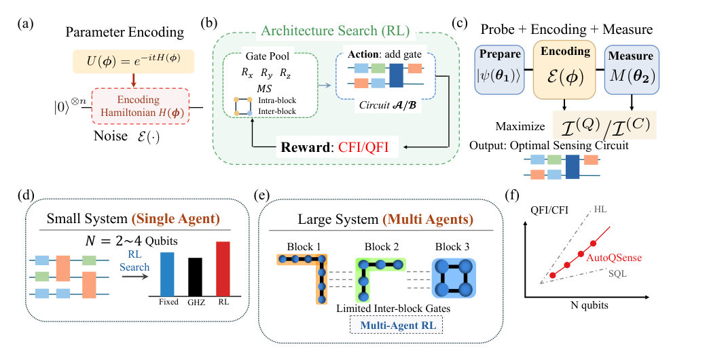
<figcaption class="paper-figure-caption"><b>Fig 1.</b> FIG. 1: Automating variational quantum sensing with reinforcement-learned circuit structures. (a) An unknown parameter is encoded in an n-qubit probe through an encoding Hamiltonian, in the presence of noise. (b) The AUTOQSENSE reinforcement-learning loop: an agent selects gates from a predefined pool to construct a circuit, which is evaluated by a CFI or QFI reward. (c) The resulting sensing protocol prepares a parameterized probe, encodes the unknown parameter, and applies a parameterized measurement to maximize the QFI or CFI. (d) For small systems, a single agent searches for an optimized circuit and compares its performance with fixed and GHZ-state baselines. (e) For larger systems,...</figcaption>
</figure>
<figure class="paper-figure-card">
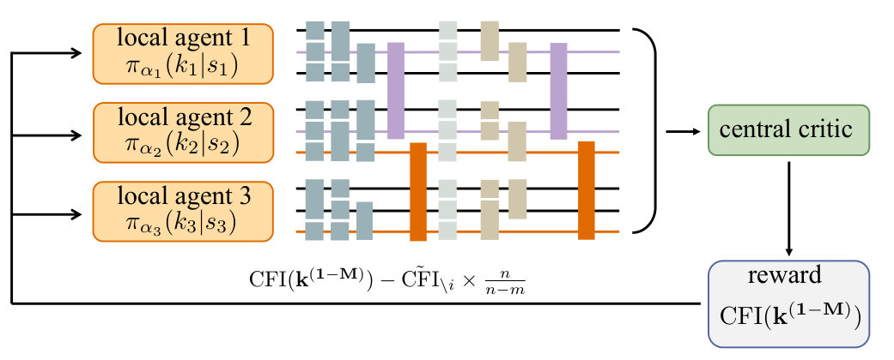
<figcaption class="paper-figure-caption"><b>Fig 2.</b> FIG. 2: Schematic of the multi-agent RL framework for distributed quantum-sensor architecture search. Each local agent observes its local state si and samples a local circuit action ki from its policy παi(ki|si). The local actions are assembled into a global circuit architecture k(1−M), which is evaluated by a centralized evaluator. The resulting CFI, together with the estimated local contribution, is used as the reward to update the local policies.</figcaption>
</figure>
<figure class="paper-figure-card">
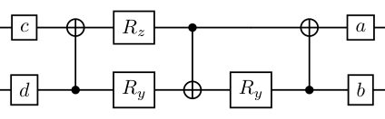
<figcaption class="paper-figure-caption"><b>Fig 3.</b> FIG. 3: Universal two-qubit circuit. Here, a, b, c, and d denote gen- eral SU(2) rotations.</figcaption>
</figure>
<figure class="paper-figure-card">
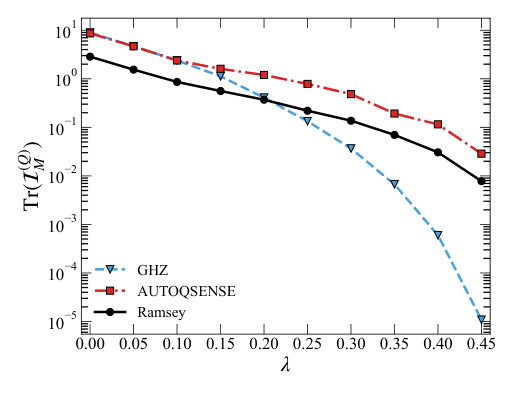
<figcaption class="paper-figure-caption"><b>Fig 4.</b> FIG. 5: Comparison of AUTOQSENSE with GHZ interferometry and Ramsey spectroscopy for three-qubit magnetic-field sensing un- der dephasing noise of strength λ. Tr(I(Q) M ) (log scale) is plotted as a function of λ. In the low-noise regime, AUTOQSENSE achieves performance comparable to GHZ interferometry and exceeds Ram- sey spectroscopy. As dephasing increases, GHZ rapidly degrades due to its reliance on multipartite entanglement, while Ramsey ex- hibits gradual decay. AUTOQSENSE maintains the highest Tr(I(Q) M ) across the entire noise range, demonstrating adaptive robustness to decoherence.</figcaption>
</figure>
<figure class="paper-figure-card">
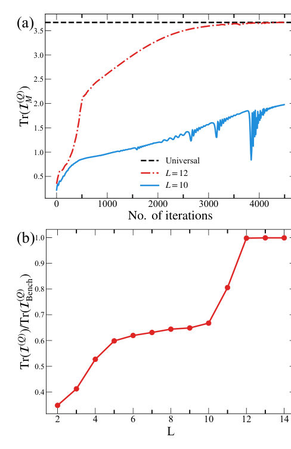
<figcaption class="paper-figure-caption"><b>Fig 5.</b> FIG. 4: (a) Comparison of the sensing performance between the cir- cuit discovered by AUTOQSENSE and the universal ansatz, evaluated in terms of the cost function Tr(I(Q) M ) for the 3D magnetic field es- timation task. AUTOQSENSE successfully matches the optimal per- formance, demonstrating its ability to autonomously discover high- precision sensing protocols. (b) The ratio of Tr(I(Q) M ) to the optimal Tr(I(Q) Bench) given by the universal two-qubit circuit.</figcaption>
</figure>
</div>

<p><strong>Summary.</strong> This paper introduces AutoQSense, an RL framework that automates the design of quantum sensing protocols by optimizing the circuit architecture itself, not just the parameters. By treating circuit design as a sequential decision process, it achieves superior sensitivity compared to fixed ansätze. This establishes a resource-aware methodology for adaptive quantum metrology applicable to large, complex quantum hardware.</p>
<p><strong>Why it may be interesting.</strong> The integration of RL for circuit design directly addresses the resource-aware optimization needed in quantum metrology, providing a systematic way to navigate the vast space of possible quantum circuits.</p>
<details>
<summary>Detailed structure</summary>
<p><strong>Main problem.</strong> The core problem is automating Variational Quantum Sensing (VQS) by optimizing not only continuous variational parameters but also the underlying quantum circuit architectures themselves.</p>
<p><strong>Main result.</strong> The proposed framework, AutoQSense, successfully learns adaptive, hardware-compatible quantum sensing protocols that outperform fixed, hardware-efficient ansätze while using fewer entangling gates.</p>
<p><strong>Method.</strong> It employs a nested optimization loop: an inner VQS loop optimizes parameters using quantum gradients, while an outer Reinforcement Learning (RL) loop updates the circuit architecture (the policy) based on the resulting Fisher Information.</p>
<p><strong>Model / system.</strong> The system is an $n$-qubit quantum processor used for parameter estimation. The methodology scales from single-agent search for small systems to a distributed multi-agent formulation for large, lattice-connected systems.</p>
<p><strong>Key observables.</strong> Quantum Fisher Information (QFI) and Classical Fisher Information (CFI) are the primary objectives, used to define the RL reward function.</p>
<p><strong>Important parameters / regimes.</strong> The optimization involves variational parameters ($ heta$) and the discrete architectural choices (gate sequences/connectivity $A, B$).</p>
<p><strong>Assumptions / limitations.</strong> The primary assumption addressed is that existing VQS methods are limited by fixed, a priori circuit ansätze, which the RL framework overcomes.</p>
<p><strong>Figures summary.</strong> Figures illustrate the AUTOQSENSE workflow, comparing its performance against benchmarks like the Standard Quantum Limit (SQL) and fixed ansätze, especially showing gains in QFI and reduced gate count.</p>
<p><strong>Paper structure.</strong> The paper introduces the VQS problem, identifies the architectural limitation, proposes the RL framework (AutoQSense), details the single-agent and multi-agent implementations, and validates the approach by showing performance gains and structural insights.</p>
</details>
<details>
<summary>Abstract</summary>
<p>Variational quantum sensing offers a promising route to high-precision parameter estimation, but its performance depends strongly on the circuit architectures used for probe preparation and measurement. Existing approaches typically optimize continuous parameters within predefined ansätze, restricting the accessible design space and limiting adaptation to sensing tasks and hardware constraints. Here, we introduce \textsc{AutoQSense}, a reinforcement-learning framework that searches circuit architectures using Fisher-information-based objectives. For few-qubit systems, a single agent sequentially constructs preparation and measurement circuits. For larger systems, a distributed formulation assigns local circuit design to subsystem agents and inter-block entanglement to a budgeted agent. Numerical results show that the learned architectures recover known benchmark strategies, adapt to dephasing noise, and outperform fixed hardware-efficient ansätze while using fewer entangling gates. These results establish \textsc{AutoQSense} as a resource-aware approach to adaptive and hardware-compatible quantum sensing.</p>
</details>
<p><sub><a href="#top">↑ back to top</a></sub></p>

<p><a id="paper-2608.18044"></a></p>
<h3 id="clops-benchmarking-system-speed-at-utility-scale"><a href="http://arxiv.org/abs/2608.18044v1">CLOPS: Benchmarking System Speed at Utility Scale</a></h3>
<p><strong>Authors:</strong> Andrew Wack<br>
<strong>Type:</strong> theory · <strong>Category:</strong> quantum information and computing · <strong>PDF:</strong> <a href="https://arxiv.org/pdf/2608.18044v1">https://arxiv.org/pdf/2608.18044v1</a><br>
<strong>Analysis basis:</strong> full PDF text, analyzed in chunks
<strong>Topic relevance:</strong> <code>quantum measurements</code> <strong>1/5</strong></p>
<div class="figure-strip-hint">↔ Scroll figures horizontally</div>
<div class="paper-figures-scroll">
<figure class="paper-figure-card">
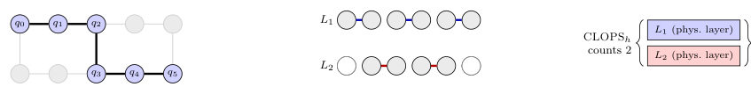
<figcaption class="paper-figure-caption"><b>Fig 1.</b> FIG. 1. Layer decomposition on a heavy-hex device and its dual role. (a) Both LF and CLOPSh are measured on a connected 1D chain of N qubits (blue) selected from the device coupling graph (faded). (b) Because each physical layer must be a qubit- disjoint matching of two-qubit gates, the chain decomposes into two disjoint physical layers: L1 on the even bonds (starting at q0) and L2 on the odd bonds (starting at q1), following McKay et al. [7]. Qubits idle in a given slice (open circles) still receive twirled single-qubit gates. Each physical layer is one hardware time slice and one CLOPSh counting unit. (c) The ordered pair {L1; L2} constitutes one EPLG layer: LF assesses the pair as a...</figcaption>
</figure>
<figure class="paper-figure-card">
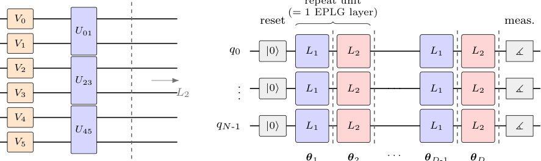
<figcaption class="paper-figure-caption"><b>Fig 2.</b> FIG. 2. Executable structure of a CLOPSh circuit. (a) One physical layer Lk(θk) comprises fully twirled single-qubit gates Vi on all N qubits (idle qubits included), qubit-disjoint two-qubit gates Uij over a matching of the coupling graph, and a terminating global synchronization barrier. (b) The template C(θ) = L1L2 · · · LD is built by cycling the fixed sublayer decomposition of Fig. 1b—for the chain, the pair {L1, L2} (one EPLG layer, the repeat unit)—to a total of D physical layers. Structural labels L1, L2 therefore recur along the depth axis, but each depth position k = 1 . . . D binds its own parameter set θk, so no two slices are identical even where their structure matches. Each...</figcaption>
</figure>
</div>

<p><strong>Summary.</strong> This paper introduces CLOPSh, a new benchmark metric designed to accurately measure the sustained operational speed of large-scale quantum processors. It addresses the gap in current metrics by defining speed based on layered, hardware-aware circuits, ensuring that speed measurements are intrinsically linked to independently verified quality levels. This provides a necessary, holistic tool for assessing the true utility potential of quantum hardware.</p>
<p><strong>Why it may be interesting.</strong> It provides a rigorous, multi-level framework for benchmarking quantum hardware performance, which is crucial for any theoretical work relying on realistic estimates of quantum computation time or resource scaling.</p>
<details>
<summary>Detailed structure</summary>
<p><strong>Main problem.</strong> Existing quantum speed metrics fail to capture the sustained, end-to-end throughput required for utility-scale quantum algorithms, especially those involving classical-quantum feedback loops.</p>
<p><strong>Main result.</strong> The authors propose CLOPSh (Circuit Layer Operations Per Second), a holistic benchmark that measures sustained throughput by defining speed over hardware-aware, layered circuits, thereby linking speed directly to independently verified quality envelopes.</p>
<p><strong>Method.</strong> The work formalizes a new benchmarking metric, CLOPSh, which measures the rate of executing physical circuit layers, ensuring the speed measurement is structurally compatible with existing Layer Fidelity (LF) quality benchmarks.</p>
<p><strong>Model / system.</strong> The focus is on scaling quantum processors to hundreds of qubits, analyzing performance across an abstraction hierarchy (Qubit $
ightarrow$ Device $
ightarrow$ System $
ightarrow$ Application) to address utility-scale workloads.</p>
<p><strong>Key observables.</strong> CLOPSh (Circuit Layer Operations Per Second), Max Circuits Per Second (MCPS), Layer Fidelity (LF), and the overall system throughput rate.</p>
<p><strong>Important parameters / regimes.</strong> Utility-scale workloads, layered/parameterized circuits, and the need to account for classical-quantum overheads.</p>
<p><strong>Assumptions / limitations.</strong> The primary assumption is that sustained, steady-state throughput, measured layer-by-layer, is the correct metric to guide hardware development beyond simple gate counts or fidelity measurements.</p>
<p><strong>Figures summary.</strong> The notes mention a table organizing representative benchmarks across four levels of abstraction (Qubit, Device, System, Application) for Scale, Quality, and Speed, and a figure illustrating physical sublayers as the counting unit for CLOPSh.</p>
<p><strong>Paper structure.</strong> The paper establishes the limitations of existing metrics (QV, gate rates), introduces the comprehensive CLOPS framework, and then details CLOPSh as the specific, necessary instantiation for the utility-scale regime, ensuring speed and quality are measured coherently.</p>
</details>
<details>
<summary>Abstract</summary>
<p>As quantum processors scale to hundreds of qubits, execution speed is a critical performance dimension alongside scale and quality. While substantial progress has been made in benchmarking circuit fidelity, existing speed metrics often fail to reflect the sustained, end-to-end throughput experienced by users running utility-scale workloads. This shortfall is especially pronounced for layered, parameterized circuits executed repeatedly within classical-quantum workflows, such as variational algorithms and error-mitigated simulations.   In this work, we formalize CLOPS_h (Circuit Layer Operations Per Second) as a holistic speed benchmark defined over layered, hardware-aware circuits. CLOPS_h measures the sustained rate at which the system executes physical layers, parallel slices of qubit-disjoint two-qubit gates separated by synchronization barriers. Because each such layer is one time slice of an N-qubit circuit, this rate maps directly to the execution rate of layered $N$-qubit circuits, connecting CLOPS_h to published device capability claims, and to the device-level throughput ceiling we formalize as Max Circuits Per Second (MCPS). CLOPS_h is obtained under layer-fidelity operating conditions, binding the speed measurement to an independently verified quality envelope, and it shares its layer decomposition with scalable layer-fidelity (LF) quality benchmarks, enabling coherent interpretation of speed and quality without conflating the two.</p>
</details>
<p><sub><a href="#top">↑ back to top</a></sub></p>

<p><a id="paper-2608.17069"></a></p>
<h3 id="dynamic-entanglement-weighted-pruning-for-quantum-federated-unlearning-in-supply-chain-risk-prediction"><a href="http://arxiv.org/abs/2608.17069v1">Dynamic Entanglement-Weighted Pruning for Quantum Federated Unlearning in Supply-Chain Risk Prediction</a></h3>
<p><strong>Authors:</strong> Aditya Kumar, Sumit Chongder<br>
<strong>Type:</strong> theory · <strong>Category:</strong> quantum information and computing · <strong>PDF:</strong> <a href="https://arxiv.org/pdf/2608.17069v1">https://arxiv.org/pdf/2608.17069v1</a><br>
<strong>Analysis basis:</strong> full PDF text, analyzed in chunks
<strong>Topic relevance:</strong> <code>quantum measurements</code> <strong>1/5</strong></p>
<div class="figure-strip-hint">↔ Scroll figures horizontally</div>
<div class="paper-figures-scroll">
<figure class="paper-figure-card">
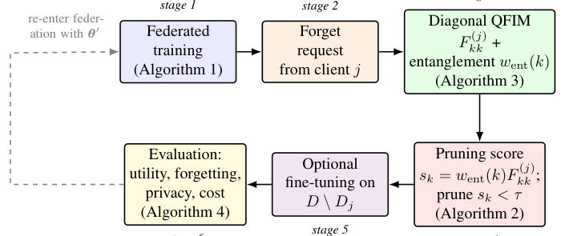
<figcaption class="paper-figure-caption"><b>Fig 1.</b> Figure 1: End-to-end Entanglement-Weighted Pruning pipeline. Federated training (stage 1, Algorithm 1) converges to θ⋆; a forget request from client j (stage 2) triggers estimation of the client-conditioned diagonal QFIM and the structural entanglement weight for every trainable parameter (stage 3, Algorithm 2); parameters are scored and pruned below threshold τ (stage 4, Algorithm 3); an optional short fine-tuning pass on the retained clients recovers utility (stage 5); and the unlearned model is evaluated for utility, forgetting, privacy leakage, and computational cost before optionally re-entering the federation (stage 6, Algorithm 4).</figcaption>
</figure>
<figure class="paper-figure-card">

<figcaption class="paper-figure-caption"><b>Fig 2.</b> Figure 1 previews the complete pipeline studied in this paper, and Figure 2 details the underlying fed- erated communication pattern between clients and the coordinating server; both are referenced throughout Sections 3–6 and are reproduced here, rather than deferred to an appendix, because they orient the reader before the formal notation is introduced.</figcaption>
</figure>
<figure class="paper-figure-card">
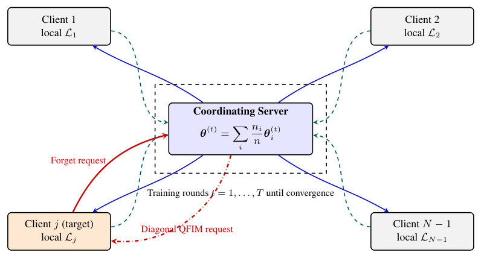
<figcaption class="paper-figure-caption"><b>Fig 3.</b> Figure 2: Federated communication workflow between the coordinating server and N participating clients. During each communication round t, the server broadcasts the current global parameters θ(t) (solid blue arrows), each client performs local optimization on its private dataset and uploads the updated parameters θ(t+1) i (dashed teal arrows), and the server computes the sample-weighted federated aggregation. Fol- lowing a forgetting request from client j (solid red arrow), the server or client j in a privacy-preserving deployment, obtains the client-specific diagonal QFIM required to compute the entanglement-weighted pruning score in Equation (1) (dash-dotted red arrow), after which the...</figcaption>
</figure>
<figure class="paper-figure-card">
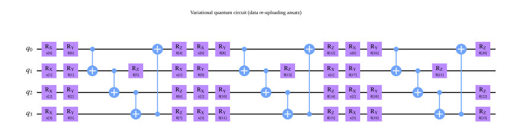
<figcaption class="paper-figure-caption"><b>Fig 4.</b> Figure 3: Data re-uploading variational ansatz used for local client training. Each of the three layers re-encodes the input features through RX gates, applies trainable RY and RZ rotations, and couples qubits through a ring of CNOT gates. Parameter indices k = 1, . . . , 24 map directly onto the pruning scores sk computed in Section 4.4.</figcaption>
</figure>
<figure class="paper-figure-card">
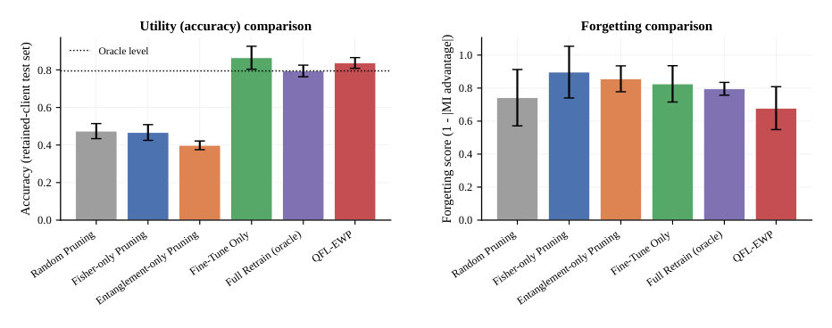
<figcaption class="paper-figure-caption"><b>Fig 5.</b> Figure 4: Utility and forgetting across all methods, mean ± std. over three seeds. EWP matches the full-retraining oracle on accuracy while improving on its forgetting score.</figcaption>
</figure>
</div>

<p><strong>Summary.</strong> This work introduces Entanglement-Weighted Pruning (EWP), a novel unlearning technique for quantum federated learning. EWP prunes quantum circuit parameters by combining data sensitivity (via QFIM) and structural importance (via entanglement weight). It demonstrates that this method achieves near-perfect data removal accuracy while drastically reducing computational overhead compared to full model retraining.</p>
<p><strong>Why it may be interesting.</strong> It provides a concrete, quantum-enhanced technique for model auditing and data removal, which is crucial for deploying quantum machine learning models in regulated, multi-party settings.</p>
<details>
<summary>Detailed structure</summary>
<p><strong>Main problem.</strong> The paper addresses the challenge of 'machine unlearning' in Quantum Federated Learning (QFL) to efficiently remove the influence of a specific client's data contribution, satisfying data privacy regulations like GDPR.</p>
<p><strong>Main result.</strong> The proposed Entanglement-Weighted Pruning (EWP) method achieved post-unlearning accuracy statistically indistinguishable from full retraining while requiring significantly less computational time.</p>
<p><strong>Method.</strong> EWP scores each trainable circuit parameter by multiplying the diagonal entry of the Quantum Fisher Information Matrix (QFIM) by a structural entanglement weight derived from the gate's coupling.</p>
<p><strong>Model / system.</strong> The model uses variational quantum classifiers trained on a four-qubit data-re-uploading ansatz within a federated learning framework (FedAvg).</p>
<p><strong>Key observables.</strong> Classification accuracy, AUROC, forgetting score, membership-advantage gap, and wall-clock time.</p>
<p><strong>Important parameters / regimes.</strong> The trainable circuit parameters ($ heta_k$), the QFIM diagonal entries ($F_{kk}$), and the structural entanglement weight ($w_{ent}(k)$).</p>
<p><strong>Assumptions / limitations.</strong> The method relies on the diagonal approximation of the QFIM and assumes that parameters with low combined scores can be safely pruned without significant performance loss.</p>
<p><strong>Figures summary.</strong> Figure 1 illustrates the end-to-end EWP pipeline across six stages, while Figure 2 details the federated communication workflow during training and forgetting.</p>
<p><strong>Paper structure.</strong> The paper outlines the QFL setup, introduces the EWP mechanism combining QFIM and entanglement weights, details the pruning process, and benchmarks EWP against various baselines using simulated supply-chain risk data.</p>
</details>
<details>
<summary>Abstract</summary>
<p>Federated deployments of variational quantum classifiers are attractive for cross-organisation risk prediction in supply chains, because raw data never leaves the client, yet data-protection regulations such as the GDPR grant clients a right to request that their contribution be removed from a trained model after the fact. Retraining a federated model from scratch to honour such a request is correct but wasteful, and it is not obvious which quantum circuit parameters actually carry a given client's influence. We introduce Entanglement-Weighted Pruning (EWP), an unlearning procedure for quantum federated learning that scores every trainable circuit parameter with the product of two signals: the diagonal entry of the quantum Fisher information matrix estimated on the target client's data via the parameter-shift rule, and a structural entanglement weight associated with the parameter's gate. Parameters with the lowest scores are pruned, optionally followed by a short fine-tuning pass on the retained clients. We implement the full pipeline in Qiskit for a four-qubit data-re-uploading ansatz trained with FedAvg across five simulated supply-chain-risk clients, and benchmark EWP against full retraining, fine-tuning alone, random pruning, Fisher-only pruning, and entanglement-only pruning, over three random seeds. EWP attains a mean post-unlearning accuracy statistically indistinguishable from the full-retraining oracle, while producing a lower forgetting score and requiring roughly 16 times less wall-clock time. Ablations over pruning threshold, client count, and non-IID strength show that combining the two signals is necessary, as entanglement-only and Fisher-only pruning each substantially degrade accuracy relative to EWP.</p>
</details>
<p><sub><a href="#top">↑ back to top</a></sub></p>

<p><a id="paper-2608.17065"></a></p>
<h3 id="exact-moments-of-gaussian-gram-hafnians-reveal-an-math529math-threshold-for-weak-anticoncentration"><a href="http://arxiv.org/abs/2608.17065v1">Exact Moments of Gaussian Gram Hafnians Reveal an $n^2/\log n$ Threshold for Weak Anticoncentration</a></h3>
<p><strong>Authors:</strong> Hongru Zhao<br>
<strong>Type:</strong> theory · <strong>Category:</strong> quantum information and computing · <strong>PDF:</strong> <a href="https://arxiv.org/pdf/2608.17065v1">https://arxiv.org/pdf/2608.17065v1</a><br>
<strong>Analysis basis:</strong> full PDF text, analyzed in chunks
<strong>Topic relevance:</strong> <code>analog quantum simulation</code> <strong>1/5</strong></p>
<div class="figure-strip-hint">↔ Scroll figures horizontally</div>
<div class="paper-figures-scroll">
<figure class="paper-figure-card">
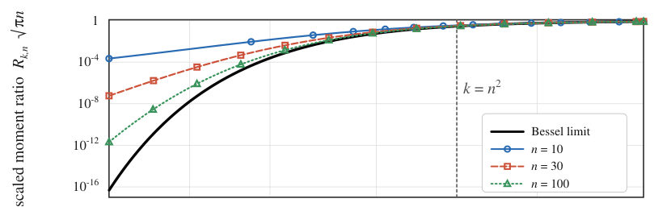
<figcaption class="paper-figure-caption"><b>Fig 1.</b> Figure 1: Exact finite sum ratio from Eq. (4) for n = 10, 30, 100, together with the Bessel limit in Eq. (7). Both axes are logarithmic; symbols show exact finite n evaluations, not simulated data, and the vertical line marks k = n2. For every fixed k/n2 &gt; 0, the scaled ratio approaches a positive limit, so the quadratic scale is a crossover within the weak regime.</figcaption>
</figure>
</div>

<p><strong>Summary.</strong> This theoretical paper analyzes the moments of the Gaussian Gram Hafnian, a key observable in Gaussian Boson Sampling. By calculating the moment ratio $R_{k,n}$, the authors establish that the threshold for weak anticoncentration scales as $k \sim n^2 / \log n$. This provides a precise mathematical boundary for the performance limits of the surrogate model used to study quantum interference effects.</p>
<p><strong>Why it may be interesting.</strong> The connection between moment calculations of quantum observables (like the Hafnian) and establishing fundamental scaling thresholds (like the $n^2/\log n$ boundary) is highly relevant for understanding the limits of quantum advantage in photonic quantum information processing.</p>
<details>
<summary>Detailed structure</summary>
<p><strong>Main problem.</strong> The paper determines the scaling threshold for 'weak anticoncentration' by analyzing the exact moments of Gaussian Gram Hafnians.</p>
<p><strong>Main result.</strong> The critical scaling order boundary for weak anticoncentration is found to be $k \sim n^2 / \log n$, contrasting with the smooth Bessel crossover observed at $k \sim n^2$.</p>
<p><strong>Method.</strong> The analysis involves calculating the second and fourth moments of the Hafnian, $H_{k,n}$, by reducing them to rank two Gaussian integrals and expressing the resulting moment ratio in terms of terminating generalized hypergeometric polynomials.</p>
<p><strong>Model / system.</strong> The study uses the independent Gaussian surrogate model for collision-free Gaussian Boson Sampling (GBS). The core mathematical object is the Gram Hafnian, $H_{k,n} = 	ext{haf}(X^T X)$, where $X$ has independent standard circular complex Gaussian entries.</p>
<p><strong>Key observables.</strong> The moment ratio $R_{k,n} = (\mathbb{E}|H_{k,n}|^2)^2 / \mathbb{E}|H_{k,n}|^4$ is the primary diagnostic quantity.</p>
<p><strong>Important parameters / regimes.</strong> The ratio $k/n^2$ (squeezed input modes to detected photons) and the logarithmic scaling factor $\log n$ are crucial parameters.</p>
<p><strong>Assumptions / limitations.</strong> The results are strictly limited to the independent Gaussian surrogate moment criterion and do not apply to finite dimensional Haar moment transfer or high probability small ball anticoncentration.</p>
<p><strong>Figures summary.</strong> Figure 1 compares the exact finite sum ratio $R_{k,n}$ against the theoretical Bessel limit, marking the $k=n^2$ crossover line.</p>
<p><strong>Paper structure.</strong> The paper proceeds by deriving exact moment formulas for the Hafnian, establishing the closed-form expression for the moment ratio $R_{k,n}$ using hypergeometric functions, and finally analyzing the asymptotic behavior to pinpoint the $n^2/\log n$ threshold for weak anticoncentration.</p>
</details>
<details>
<summary>Abstract</summary>
<p>Anticoncentration is central to hardness arguments for approximate sampling. In the independent Gaussian surrogate for collision free Gaussian boson sampling, the moment ratio studied here also determines the averaged ideal linear cross entropy reference value. Let $H_{k,n}=\mathrm{haf}(X^{\mathsf T}X)$, where $X\in\mathbb{C}^{k\times 2n}$ has independent standard circular complex Gaussian entries. We evaluate $\mathbb{E}|H_{k,n}|^2$ and $\mathbb{E}|H_{k,n}|^4$ exactly by reducing four hafnian copies to a rank two Gaussian integral. For $R_{k,n}=(\mathbb{E}|H_{k,n}|^2)^2/\mathbb{E}|H_{k,n}|^4$, we obtain $R_{k,n}=4^{-n}\binom{2n}{n}/F_{k,n}$, where $F_{k,n}={}3F_2(-n,-n,1/2;1,k/2;1)$ is a terminating generalized hypergeometric polynomial. If $k/n^2\to c>0$, then $F{k,n}\to e^{1/c}I_0(1/c)$, where $I_0$ is the modified Bessel function of the first kind of order zero, and consequently $R_{k,n}\sqrt{πn}\to[e^{1/c}I_0(1/c)]^{-1}$. Thus $k\asymp n^2$ is a smooth Bessel crossover, whereas the scaling order boundary for inverse polynomial weak anticoncentration is $k\asymp n^2/\log n$. These conclusions concern the Gaussian surrogate moment criterion; finite dimensional Haar moment transfer and high probability small ball anticoncentration remain separate problems.</p>
</details>
<p><sub><a href="#top">↑ back to top</a></sub></p>

<p><a id="paper-2608.17229"></a></p>
<h3 id="incidence-based-random-walks-on-simplicial-complexes"><a href="http://arxiv.org/abs/2608.17229v1">Incidence-based random walks on simplicial complexes</a></h3>
<p><strong>Authors:</strong> C. T. Martínez-Martínez, Francisco J. Sevilla<br>
<strong>Type:</strong> theory · <strong>Category:</strong> statistical mechanics · <strong>PDF:</strong> <a href="https://arxiv.org/pdf/2608.17229v1">https://arxiv.org/pdf/2608.17229v1</a><br>
<strong>Analysis basis:</strong> full PDF text, analyzed in chunks
<strong>Topic relevance:</strong> <code>analog quantum simulation</code> <strong>1/5</strong></p>
<div class="figure-strip-hint">↔ Scroll figures horizontally</div>
<div class="paper-figures-scroll">
<figure class="paper-figure-card">
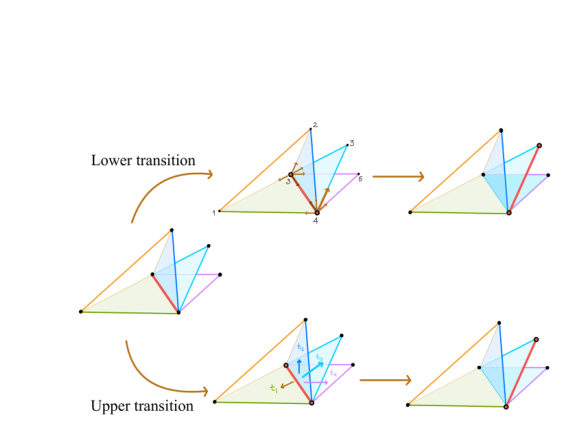
<figcaption class="paper-figure-caption"><b>Fig 1.</b> FIG. 1. Schematic representation of the two elementary trans- port channels defining the edge walk. Lower transition: the walker moves from an edge (red) to one of its two incident vertices {3, 4}, in the example the walker chose vertex 4, then chooses one edge incident to the chosen vertex, edge (4, 3) in the example. Upper transition: the walker moves from an edge (red) to one of its incident triangles and then to another boundary edge of that triangle.</figcaption>
</figure>
<figure class="paper-figure-card">
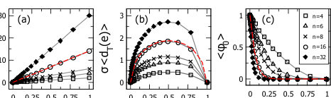
<figcaption class="paper-figure-caption"><b>Fig 2.</b> FIG. 2. Structural properties of the random face-diluted en- semble X(n, p). (a) Mean triangle degree ⟨dT ⟩, (b) standard deviation σ(dT ), and (c) inactive-edge fraction ϕ0, as func- tions of the face-retention probability p. Symbols correspond to different values of n, while the dashed red line indicates the theoretical prediction for n = 16 [Eqs. (24)–(26)].</figcaption>
</figure>
<figure class="paper-figure-card">
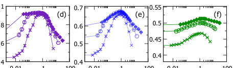
<figcaption class="paper-figure-caption"><b>Fig 3.</b> FIG. 3. Average second-largest eigenvalue modulus ⟨λ∗⟩of the effective transition operator. The top row presents ⟨λ∗⟩ as a function of the face-retention probability p, whereas the bottom row shows the corresponding results as a function of the mean upper degree ⟨dT ⟩= (n −2)p. Columns correspond to q = 0.1, 0.5, and 0.9, respectively. Each symbol represents the average over an ensemble of 180000/n independent real- izations.</figcaption>
</figure>
<figure class="paper-figure-card">
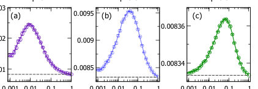
<figcaption class="paper-figure-caption"><b>Fig 4.</b> FIG. 4. Average inverse participation ratio ⟨IPR(π)⟩of the stationary distribution as a function of the face-retention probability p for a system of size n = 16. Panels (a)–(c) correspond to q = 0.1, 0.5, and 0.9, respectively. The horizontal dashed line denotes the uniform reference value 1/|X1| = 1/120. Error bars represent the standard error over independent realizations.</figcaption>
</figure>
<figure class="paper-figure-card">
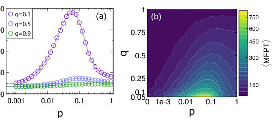
<figcaption class="paper-figure-caption"><b>Fig 5.</b> FIG. 5. Mean first-passage time ⟨MFPT⟩for the effective random walk. (a) Mean first-passage time ⟨MFPT⟩as a function of the face-retention probability p for representative values of the mixing parameter q and fixed system size n = 16. (b) Contour map of ⟨MFPT⟩in the (p, q) parameter space.</figcaption>
</figure>
</div>

<p><strong>Summary.</strong> This work develops a framework for random walks on simplicial complexes, modeling transport via two coupled channels: vertex-mediated and face-mediated. By analyzing the effect of partially retained triangles, the authors demonstrate that intermediate levels of structural disorder create a pronounced transport bottleneck. This establishes a simple yet powerful method to quantify how higher-order connectivity reshapes network dynamics.</p>
<p><strong>Why it may be interesting.</strong> The study of transport bottlenecks due to structural heterogeneity is highly relevant to understanding energy or information flow in complex, disordered physical systems, which shares conceptual links with glassy dynamics or disordered quantum systems.</p>
<details>
<summary>Detailed structure</summary>
<p><strong>Main problem.</strong> The paper investigates how incorporating heterogeneous higher-order connectivity (triangles) into a random walk fundamentally alters its spectral and transport properties compared to simple pairwise network dynamics.</p>
<p><strong>Main result.</strong> The analysis reveals that the most pronounced transport bottleneck—manifested as maximum mean first-passage time—occurs in an intermediate regime of partial face dilution, suggesting heterogeneity is key.</p>
<p><strong>Method.</strong> The authors analyze the effective transition operator governing the random walk on the edges of a simplicial complex, using spectral analysis and calculating mean first-passage times.</p>
<p><strong>Model / system.</strong> The model is an incidence-based random walk defined on the edges of a random 2D simplicial complex. The dynamics combine two channels: one mediated by vertices (lower) and one by triangular faces (upper), controlled by a mixing parameter q.</p>
<p><strong>Key observables.</strong> Second-largest eigenvalue modulus, inverse participation ratio, mean first-passage time, and the survival probability of first-passage time.</p>
<p><strong>Important parameters / regimes.</strong> Face retention probability (p) and the mixing parameter (q), which control the degree of higher-order connectivity.</p>
<p><strong>Assumptions / limitations.</strong> The analysis assumes the underlying 1-skeleton is fixed (complete graph) and uses a random ensemble approach to study quenched structural heterogeneity.</p>
<p><strong>Figures summary.</strong> Figures illustrate the dependence of mean first-passage time on face density (p) and the survival probability of first-passage times across different dilution regimes.</p>
<p><strong>Paper structure.</strong> The paper builds the effective transition operator by combining elementary steps via vertices and triangles. It then analyzes the resulting dynamics across different regimes (graph-like vs. fully simplicial) to pinpoint the conditions causing dynamical slowdown.</p>
</details>
<details>
<summary>Abstract</summary>
<p>We introduce an incidence-based random walk on the edges of a random two-dimensional simplicial complex with a complete $1$-skeleton and independently retained triangular faces. The dynamics combine two transport channels, one mediated by vertices and the other by triangular faces, through an effective transition operator controlled by a mixing parameter $q$. This construction isolates the effects of higher-order connectivity without modifying the underlying pairwise support of the walk. We characterize the model through structural observables, spectral relaxation, stationary localization, and first-passage transport. Our results show that partial face retention generates heterogeneous higher-order connectivity, giving rise to a pronounced transport bottleneck at intermediate face densities. In this regime, the second-largest eigenvalue modulus, the inverse participation ratio of the stationary distribution, and the mean first-passage time all exhibit non-monotonic behavior, reaching their largest values at intermediate face densities. The corresponding first-passage-time distributions reveal an enhanced probability of unusually long trajectories. Together, these results establish a simple framework for investigating how heterogeneous higher-order connectivity reshapes spectral and transport properties beyond pairwise network dynamics.</p>
</details>
<p><sub><a href="#top">↑ back to top</a></sub></p>

<p><a id="paper-2608.17135"></a></p>
<h3 id="iterative-tensor-network-transformations-for-element-wise-evaluation-of-elementary-and-filtering-functions"><a href="http://arxiv.org/abs/2608.17135v1">Iterative tensor network transformations for element-wise evaluation of elementary and filtering functions</a></h3>
<p><strong>Authors:</strong> Xiao Wang, Tomohiro Hashizume, Pia Siegl, Dieter Jaksch<br>
<strong>Type:</strong> theory · <strong>Category:</strong> numerical methods · <strong>PDF:</strong> <a href="https://arxiv.org/pdf/2608.17135v1">https://arxiv.org/pdf/2608.17135v1</a><br>
<strong>Analysis basis:</strong> full PDF text, analyzed in chunks
<strong>Topic relevance:</strong> <code>methods for driven-dissipative</code> <strong>1/5</strong></p>
<div class="figure-strip-hint">↔ Scroll figures horizontally</div>
<div class="paper-figures-scroll">
<figure class="paper-figure-card">
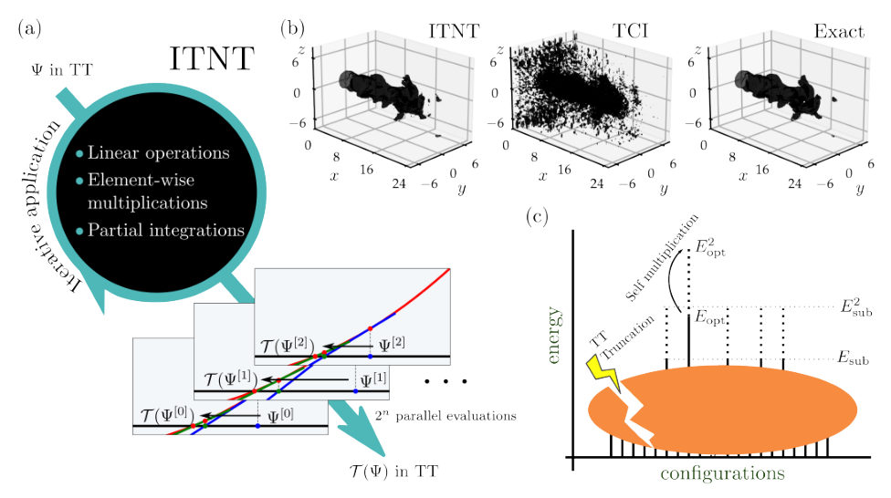
<figcaption class="paper-figure-caption"><b>Fig 1.</b> FIG. 1: Overview of the results. (a) Schematic of the Iterative tensor network transformations (ITNTs) methodology. The framework enables the evaluation of highly complex nonlinear transformations, T , directly on TT-encoded data Ψ defined on array indices j ∈{0, 1, . . . , N −1 = 2n −1}. This is achieved by leveraging 2n parallel evaluations of the iteratively converging Newton-Raphson method (bottom-right panels). In these panels, the red curve represents the nonlinear function being iteratively solved, while the blue and green lines illustrate the successive tangent-linear approximations during the iterative process, starting from the blue dot. This convergence allows the transformation...</figcaption>
</figure>
<figure class="paper-figure-card">
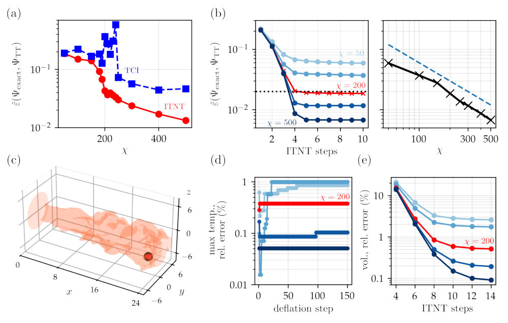
<figcaption class="paper-figure-caption"><b>Fig 2.</b> FIG. 2: Nonlinear post processing with ITNTs. (a) Convergence comparison between ITNT and TCI for the Arrhenius equation (Eq. (3)) computation. While TCI suffers from instability around χ = 200, ITNT demonstrates a drop in error in the same region, consistently converging towards the exact result with in- creasing χ. (b) Relative ℓ2 error of the 1/T field computed exactly (Ψexact) from the original field and by us- ing the ITNT algorithm (ΨTT) for χ = 50, 100, 200, 300, and 500 (light to dark, left panel), and the same er- ror at the 10th iteration for different bond dimensions. In the right panel, the blue dashed line indicates 1/χ decay as a guide to the eye. (c) The position of the...</figcaption>
</figure>
<figure class="paper-figure-card">
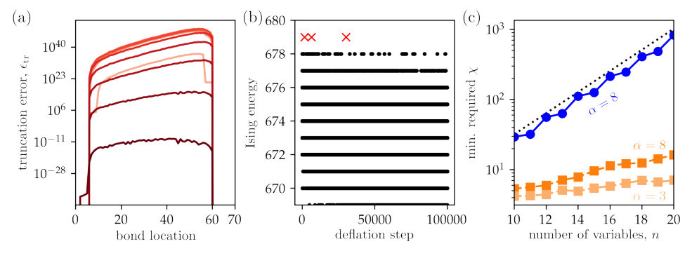
<figcaption class="paper-figure-caption"><b>Fig 3.</b> FIG. 3: Solving Max-3-SAT problems with ITNTs. (a) Truncation error at each bond in the zip- up self-multiplication algorithm. In order to solve 70 variables 700 clauses Max-3SAT problem, 10 self- multiplications are performed, and for each self-multiplication is computed with the zip-up algorithm with on-site truncation, while fixing χ = 700. Each color corresponds to a different self-multiplication iteration (iterations 1 to 10, light to dark) (b) Deflation result for the max 3-SAT problem s3v70c700-1. Three con- figurations with an energy of E with E = 679 are found after the i = 1655th, the i = 6442nd, and the i = 30186th extremum-finding ITNT steps. (c) Scaling of the minimum bond...</figcaption>
</figure>
<figure class="paper-figure-card">
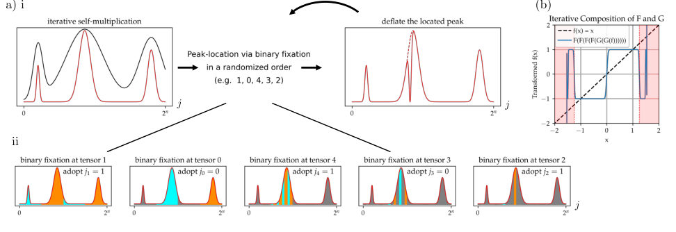
<figcaption class="paper-figure-caption"><b>Fig 4.</b> FIG. 4: ITNTs for element-wise nonlinear operations in TT representation. (a) Extrema detection with TT. i Starting from a TT representation of Ψ (black curve), repeated element-wise self-multiplication sharpens the state into a multi-peak profile Φ, where its integral is dominated by extremal configurations (red curve). ii A peak is then located by a binary fixation procedure. This involves integrating out all un- fixed sites and choosing the local configuration that maximizes the summed value. Starting from every index not being fixed, in the leftmost panel, a comparison between j2 = 0 (orange) and j2 = 1 (cyan) is performed, identifying j2 = 1 as a candidate for the optimal...</figcaption>
</figure>
</div>

<p><strong>Summary.</strong> The paper introduces Iterative Tensor Network Transformations (ITNT), a novel framework allowing general nonlinear functions to be evaluated directly on data compressed in the Tensor Train format. By leveraging iterative root-finding techniques, ITNT achieves high accuracy for complex physical simulations, such as calculating reaction rates in fluid dynamics and solving NP-hard optimization problems. This establishes tensor networks as a tool for general-purpose, large-scale data science.</p>
<p><strong>Why it may be interesting.</strong> This work provides a powerful, general-purpose computational tool that extends tensor network methods beyond linear operations, making them applicable to complex, nonlinear physics problems previously requiring computationally expensive full-space sampling.</p>
<details>
<summary>Detailed structure</summary>
<p><strong>Main problem.</strong> The core challenge is developing a general algorithmic framework to perform element-wise evaluation of arbitrary, nonlinear filtering functions directly on data encoded in the compressed Tensor Train (TT) format.</p>
<p><strong>Main result.</strong> The proposed Iterative Tensor Network Transformations (ITNT) successfully enables high-fidelity computation of nonlinear functions (like reaction rates) and locating global extrema in exponentially large configuration spaces.</p>
<p><strong>Method.</strong> ITNT utilizes iterative techniques, such as the Newton-Raphson method, combined with efficient TT operations (element-wise product, partial integration) to operate entirely in the compressed domain.</p>
<p><strong>Model / system.</strong> The methods are demonstrated on several models: 3D reactive flow fields (methane/air jet flame) for continuous field evaluation, and classical Ising models/Max-SAT instances for combinatorial optimization.</p>
<p><strong>Key observables.</strong> Reaction rates (Arrhenius factor), global energy extrema ($E_{opt}$), and the relative $\ell_2$ error ($  ilde{\epsilon}$).</p>
<p><strong>Important parameters / regimes.</strong> Bond dimension ($\chi$), number of iterations ($N_{	ext{iter}}$), and the required preprocessing steps (e.g., self-multiplication power $P$).</p>
<p><strong>Assumptions / limitations.</strong> The framework assumes that the required functions can be mapped to iterative root-finding problems solvable via the Newton-Raphson method or related fixed-point iterations.</p>
<p><strong>Figures summary.</strong> Figures illustrate the methodology for nonlinear evaluation (Fig. 1a, 1b) and the application to optimization, showing convergence comparisons between ITNT and interpolation methods (TCI).</p>
<p><strong>Paper structure.</strong> The paper introduces ITNT, details its application to continuous nonlinear PDEs (reactive flow), and then extends it to discrete, high-dimensional optimization problems like Max-SAT and Ising model energy matching.</p>
</details>
<details>
<summary>Abstract</summary>
<p>Tensor networks are powerful formats for compressing large-scale data. However, their application to general data processing has been limited by the difficulty of performing nonlinear operations. Here, we introduce iterative tensor network transformations (ITNTs), a general algorithmic framework for the element-wise evaluation of elementary and nonlinear filtering functions on data encoded as tensor trains (TTs), a class of tensor networks. Our approach operates entirely in the compressed domain, enabling efficient computation on exponentially large datasets while maintaining a controlled computational cost. We demonstrate its power in two key areas: (I) evaluating highly nonlinear elementary and filtering functions on a 3D reactive flow field, enabling high-fidelity reaction rate computation and region filtering, and (II) finding extrema in complex optimization problems, such as solving Max-SAT instances on spaces up to $2^{70}$ configurations. These results establish ITNT as a foundational tool that provides tensor network methods with the capability for general-purpose data science and large-scale optimization.</p>
</details>
<p><sub><a href="#top">↑ back to top</a></sub></p>

<p><a id="paper-2608.17750"></a></p>
<h3 id="on-the-expressive-power-of-the-transverse-field-ising-model-for-graph-learning"><a href="http://arxiv.org/abs/2608.17750v1">On the Expressive Power of the Transverse-Field Ising Model for Graph Learning</a></h3>
<p><strong>Authors:</strong> Mehdi Djellabi, Louis-Paul Henry<br>
<strong>Type:</strong> both · <strong>Category:</strong> other · <strong>PDF:</strong> <a href="https://arxiv.org/pdf/2608.17750v1">https://arxiv.org/pdf/2608.17750v1</a><br>
<strong>Analysis basis:</strong> full PDF text, analyzed in chunks
<strong>Topic relevance:</strong> <code>analog quantum simulation</code> <strong>1/5</strong></p>
<div class="figure-strip-hint">↔ Scroll figures horizontally</div>
<div class="paper-figures-scroll">
<figure class="paper-figure-card">
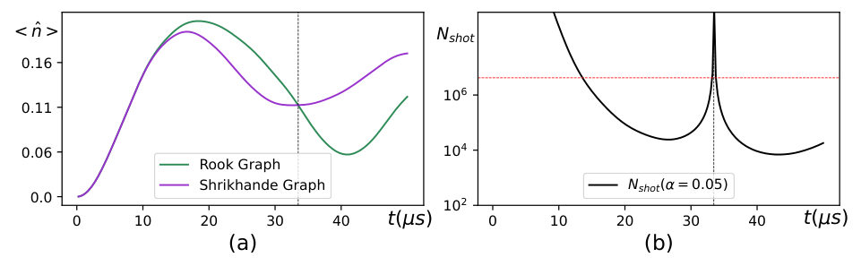
<figcaption class="paper-figure-caption"><b>Fig 1.</b> Figure 1: Rook versus Shrikhande graphs distinction. (a) One-body occupation dynamics ⟨ˆn(t)⟩. Within each graph, the vertex-transitivity property ensures that all vertices share the same trajectory due to a single vertex orbit. (b) Number of shots required to distinguish the two graphs with success probability at least 95%. The red dashed line indicates the lower bound for the time complexity scale of the exact classical counterpart (4-WL). Parameters: |ψ0⟩= |0⟩⊗N for both graphs, δ = 0 and Ω= 0.1.</figcaption>
</figure>
<figure class="paper-figure-card">

<figcaption class="paper-figure-caption"><b>Fig 2.</b> Figure 2 reports, for each family, the pair-averaged separation ¯η(1) together with its one-standard-deviation spread, and the worst-case separation mini&lt;j η(1) ij , shown as a function of the elapsed physical time tm as the horizon grows over the T time steps. Starting from a common initial state, all curves vanish at early times, before the occupations have had time to differentiate. As the evolution proceeds, the worst-case separation becomes and remains strictly positive, well above the numerical tolerance, for both families. This shows that every pair of non-isomorphic graphs in srg(26, 10, 3, 4) and srg(25, 12, 5, 6) is separated by the one-point occupation dynamics alone, thereby...</figcaption>
</figure>
<figure class="paper-figure-card">
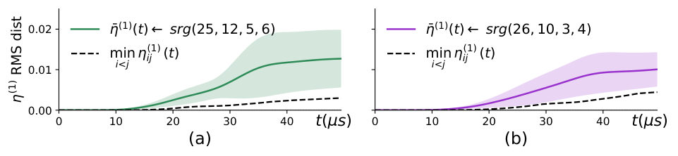
<figcaption class="paper-figure-caption"><b>Fig 3.</b> Figure 2: Permutation-invariant separability of strongly regular graph families srg(25, 12, 5, 6) (a) and srg(26, 10, 3, 4) (b), containing 15 and 10 non-isomorphic graphs respectively. The minimization over per- mutations π ∈SN is solved exactly as a linear assignment problem between the node-occupation time traces of graph pairs, and η(1) ij (t) is expressed as a root-mean-square (RMS) distance over nodes and time steps. All graphs are initialized in the common |0⟩⊗N state and evolved with constant parameters Ω= 0.1 and δ = 0. Solid lines show the pair-averaged separation ¯η(1)(t) and shaded bands the corresponding ±1 standard deviation over graph pairs. Dashed black lines show the...</figcaption>
</figure>
<figure class="paper-figure-card">
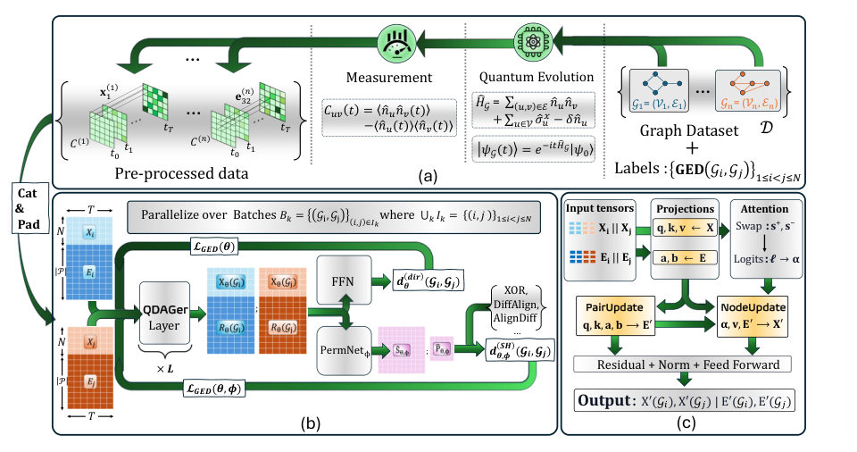
<figcaption class="paper-figure-caption"><b>Fig 4.</b> Figure 3: Detailed pipeline of the QDAGer model architecture. (a) Pre-processing phase: each graph Gi = (Vi, Ei) is mapped to the Hamiltonian of Eq. (1). Starting from a common initial state |ψ0⟩, we evolve the system as |ψG(t)⟩= exp(−it ˆHG) |ψ0⟩and evaluate the relevant observables at multiple times, namely the node occupations ⟨ˆnu⟩(t) and connected two-point correlators Cuv(t) = ⟨ˆnuˆnv⟩(t) −⟨ˆnu⟩(t)⟨ˆnv⟩(t). (b) For each graph pair (Gi, Gj), the corresponding tensors are concatenated, padded, and processed by ×L QDAGer layers to produce node embeddings Xθ and pair embeddings Rθ. These embeddings are used either by a direct distance head, yielding d(dir) θ (Gi, Gj), or by an...</figcaption>
</figure>
</div>

<p><strong>Summary.</strong> This paper proposes QDAGer, a quantum-inspired graph Transformer, to enhance graph learning by incorporating dynamical features derived from the Transverse-Field Ising Model. The authors show that the time evolution of quantum observables acts as a powerful structural signal, enabling the model to learn complex metrics like Graph Edit Distance better than purely classical structural descriptors.</p>
<p><strong>Why it may be interesting.</strong> The work bridges quantum many-body physics (Ising models, dynamics) with modern machine learning (Graph Transformers), suggesting that inherent symmetries and time-evolution properties of quantum systems can serve as powerful, structured inductive biases for solving classically hard problems.</p>
<details>
<summary>Detailed structure</summary>
<p><strong>Main problem.</strong> To develop graph representations for graph learning that capture structural information while respecting permutation invariance, particularly for hard tasks like graph comparison.</p>
<p><strong>Main result.</strong> The proposed quantum-inspired architecture, QDAGer, demonstrates that dynamical features derived from the Ising model provide a stronger inductive bias for learning Graph Edit Distance than classical structural features.</p>
<p><strong>Method.</strong> The authors introduce QDAGer, a Transformer that injects time-series data from quantum observables (node occupations and two-point correlators) into the attention mechanism for graph-pair comparison.</p>
<p><strong>Model / system.</strong> The underlying physical model is the quantum evolution governed by a graph-indexed Transverse-Field Ising Hamiltonian ($H_G$). The dynamics are analyzed by measuring time-dependent expectation values of local observables.</p>
<p><strong>Key observables.</strong> Node occupations $\langle \hat{
u}_u(t) 
angle$ and connected two-point correlators $\langle \hat{
u}_u \hat{
u}_v(t) 
angle - \langle \hat{
u}_u(t) 
angle \langle \hat{
u}_v(t) 
angle$.</p>
<p><strong>Important parameters / regimes.</strong> The performance is tested across various Graph Edit Distance (GED) benchmarks using different edit cost settings.</p>
<p><strong>Assumptions / limitations.</strong> The quantum dynamics are simulated via emulation, and the method is positioned as 'quantum-inspired' rather than claiming quantum computational advantage.</p>
<p><strong>Figures summary.</strong> Figure 1 (from Chunk 2 notes) shows that one-body occupation trajectories differ between non-isomorphic graphs (Rook's vs Shrikhande), demonstrating distinguishability.</p>
<p><strong>Paper structure.</strong> The paper first establishes the theoretical distinguishability of non-isomorphic graphs using the Ising model dynamics (Chunks 2 &amp; 3), proving that observables yield distinct time-dependent trajectories. It then applies this concept by proposing QDAGer, which integrates these dynamical features into a Transformer for practical graph learning tasks like GED (Chunks 1 &amp; 4).</p>
</details>
<details>
<summary>Abstract</summary>
<p>We study the quantum evolution induced by graph-indexed Ising Hamiltonians as a source of structural signal for graph learning. Graph automorphisms preserve symmetries of the Hamiltonian, and these symmetries constrain the quantum evolution in a way that turns time-dependent local measurements into informative probes of graph structure. Leveraging this idea, we introduce QDAGer, a quantum-inspired graph-pair Transformer that injects quantum-dynamical features from time series of node occupations and connected two-point correlators directly into the attention mechanism. We apply QDAGer to learning Graph Edit Distance (GED), an NP-hard similarity measure, using either a direct permutation-invariant embedding discrepancy or an alignment-based surrogate loss. Experiments on multiple GED benchmarks under different edit cost settings show that the proposed dynamical features provide a stronger inductive bias than classical structural alternatives under the same training protocol. In addition, we report ablations where the dynamical signal is replaced by standard random-walk and heat-kernel features while keeping the architecture fixed, highlighting that the gain comes from the injected dynamics rather than model capacity alone.</p>
</details>
<p><sub><a href="#top">↑ back to top</a></sub></p>

<p><a id="paper-2608.17609"></a></p>
<h3 id="operational-thresholds-of-bell-mixtures-with-complex-x-noise"><a href="http://arxiv.org/abs/2608.17609v1">Operational thresholds of Bell mixtures with complex X noise</a></h3>
<p><strong>Authors:</strong> Xuan Du Trinh<br>
<strong>Type:</strong> theory · <strong>Category:</strong> quantum information and computing · <strong>PDF:</strong> <a href="https://arxiv.org/pdf/2608.17609v1">https://arxiv.org/pdf/2608.17609v1</a><br>
<strong>Analysis basis:</strong> full PDF text, analyzed in chunks
<strong>Topic relevance:</strong> <code>quantum measurements</code> <strong>1/5</strong></p>
<div class="figure-strip-hint">↔ Scroll figures horizontally</div>
<div class="paper-figures-scroll">
<figure class="paper-figure-card">
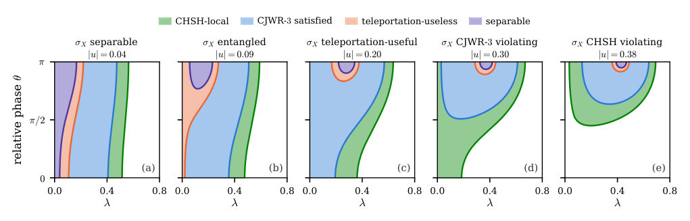
<figcaption class="paper-figure-caption"><b>Fig 1.</b> FIG. 1. Operational phase diagrams of the Bell-mixing line ρλ in the (λ, θ) plane. All panels use (a, b, c, d) = (0.42, 0.18, 0.02, 0.38) and v = 0.04, with the value of |u| shown above each panel. As |u| increases, σX is (a) separable, (b) en- tangled but teleportation-useless, (c) teleportation-useful but CJWR-3-satisfying, (d) CJWR-3-violating but CHSH-local, and (e) CHSH-violating. Colors mark where ρλ lacks each ability: green for CHSH locality, blue for CJWR-3 satisfaction, orange for teleportation uselessness, and violet for separability. These regions nest in the same order. A region touching λ = 0 indicates a single onset for an ability absent from σX. A detached region indicates...</figcaption>
</figure>
<figure class="paper-figure-card">
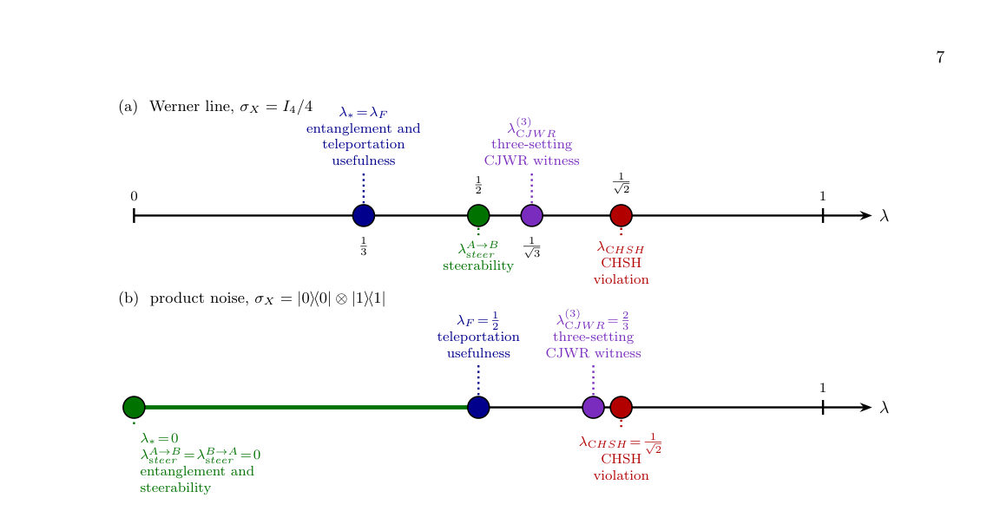
<figcaption class="paper-figure-caption"><b>Fig 2.</b> FIG. 2. Threshold order on two Bell-state mixtures. Panel (a) shows the Bell weights at which the operational abilities change along the Werner line σX = I4/4. The entanglement and teleportation usefulness thresholds coincide at λ∗= λF = 1/3 [26, 30]. The steerability threshold is 1/2 for both projective measurements [3] and POVMs [34]. The CJWR-3 witness threshold is 1/ √</figcaption>
</figure>
<figure class="paper-figure-card">
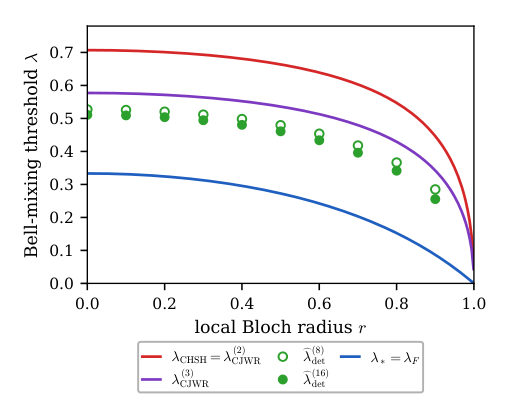
<figcaption class="paper-figure-caption"><b>Fig 3.</b> FIG. 3. Operational thresholds on the diagonal X family σX = σA ⊗σB with σA = σB = (I + rσz)/2, plotted against the local Bloch-vector length r. The curves show the CHSH- nonlocal threshold, which is also the CJWR-2 witness thresh- old, the CJWR-3 witness threshold, and λ∗= λF . Green markers show bλ(8) det and bλ(16) det , the numerical estimates of the two finite-setting thresholds. The corresponding exact finite- setting optima bound the projective-measurement steerabil- ity threshold from above. At r = 0, the eight- and sixteen- direction estimates are 0.527 and 0.511, respectively, com- pared with the exact Werner value λA→B steer = 1/2 [3].</figcaption>
</figure>
<figure class="paper-figure-card">
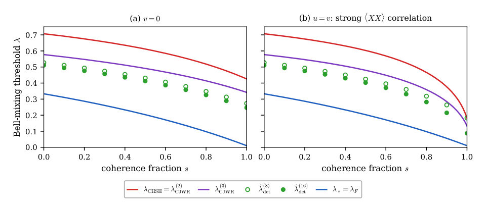
<figcaption class="paper-figure-caption"><b>Fig 4.</b> FIG. 4. Operational thresholds on two families of separable X states with diagonal (0.30, 0.25, 0.25, 0.20) and real coherence scaled by a fraction s up to the separability boundary. Panel (a) has v = 0, and panel (b) has u = v. On both families, the definitive thresholds shown by the solid curves have the order in Corollary 1. Green markers show the numerical estimates bλ(8) det and bλ(16) det . The corresponding exact finite-setting optima bound the projective-measurement steerability threshold from above. The sixteen-direction estimate lies below the CJWR-3 witness threshold, which lies below λCHSH = λ(2) CJWR (red). Thus, the numerical comparison indicates finite-setting steering...</figcaption>
</figure>
<figure class="paper-figure-card">
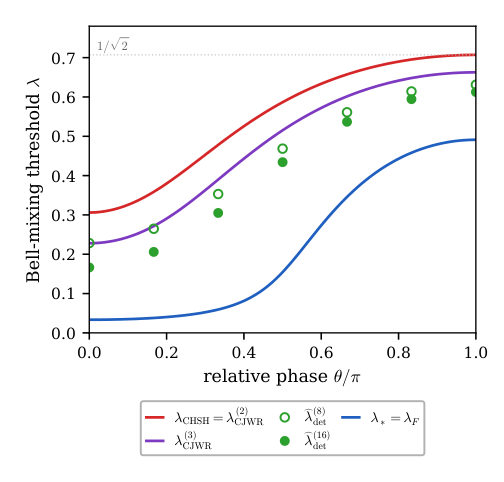
<figcaption class="paper-figure-caption"><b>Fig 5.</b> FIG. 5. Relative-phase scan at fixed populations and co- herence magnitudes, obtained from the u = v family of Fig. 4(b) at coherence fraction s = 0.95. The diagonal (0.30, 0.25, 0.25, 0.20) and |u| = v ≈0.233 are fixed, while the relative phase in u = |u|eiθ varies. The definitive thresh- olds determined by the explicit boundary conditions increase monotonically with θ. Here λ∗= λF because b = c [24]. Green markers show the numerical estimates bλ(8) det and bλ(16) det . At θ = π, the CHSH-nonlocal threshold returns to the Werner value 1/ √</figcaption>
</figure>
</div>

<p><strong>Summary.</strong> This work rigorously maps the boundaries in parameter space where a noisy Bell state retains specific quantum resources like entanglement or teleportation usefulness. By analyzing the singular-value flow of correlation tensors, the authors establish universal ordering chains between these operational thresholds. The findings are vital for understanding the robustness of quantum information protocols under realistic noise models.</p>
<p><strong>Why it may be interesting.</strong> It provides rigorous, quantitative boundaries for quantum resources in realistic noisy channels, which is crucial for designing fault-tolerant quantum communication protocols.</p>
<details>
<summary>Detailed structure</summary>
<p><strong>Main problem.</strong> The paper characterizes how various operational quantum abilities (entanglement, teleportation usefulness, steerability, etc.) are maintained or lost in noisy Bell mixtures as the noise admixture changes.</p>
<p><strong>Main result.</strong> The operational abilities are distinct, forming a universal ordered chain of thresholds as the noise parameter varies, and the unique separable/unsteerable point is found at zero noise admixture ($\lambda=0$).</p>
<p><strong>Method.</strong> The analysis relies on characterizing the singular-value flow of the Pauli correlation tensor and using semidefinite programming to determine exact thresholds for various quantum witnesses.</p>
<p><strong>Model / system.</strong> The system is a mixture of a pure Bell state ($\Phi^+$) and an arbitrary complex two-qubit X noise state ($\sigma_X$), parameterized by the Bell weight $\lambda$: $
ho_\lambda = \lambda\Phi^+ + (1 - \lambda)\sigma_X$.</p>
<p><strong>Key observables.</strong> Entanglement, teleportation usefulness, projective-measurement steerability, CJWR violation, and CHSH violation.</p>
<p><strong>Important parameters / regimes.</strong> Bell weight ($\lambda$), relative phase ($    heta$) between noise coherence and Bell coherence, and the noise parameters defining $\sigma_X$.</p>
<p><strong>Assumptions / limitations.</strong> For generic full-rank mixed X noise, upper bounds on steerability thresholds are obtained via finite-setting semidefinite programs.</p>
<p><strong>Figures summary.</strong> Figure 1 illustrates operational phase diagrams in the $(\lambda, 	heta)$ plane showing the nesting and widening of ability-absence intervals for various noise states.</p>
<p><strong>Paper structure.</strong> The paper systematically analyzes the thresholds for different operational abilities, deriving closed-form flows for specific noise types (like product noise) and proving the unique unsteerable point ($\lambda=0$) using recurrence relations for a swapping chain.</p>
</details>
<details>
<summary>Abstract</summary>
<p>Noisy Bell mixtures may carry entanglement, standard teleportation usefulness, projective-measurement steerability, and optimized Cavalcanti-Jones-Wiseman-Reid (CJWR) and Clauser-Horne-Shimony-Holt (CHSH) violations. If the noise already has an ability, the mixture may lose and later recover it at distinct boundary crossings as the Bell weight decreases. We characterize ability-absence intervals and definitive thresholds for mixtures of $|Φ^+\rangle$ with arbitrary complex two-qubit $X$ noise. A closed-form singular-value flow of the Pauli correlation tensor gives the exact teleportation-useless, CJWR-satisfying, and CHSH-local intervals, while the positive partial transpose criterion gives the exact separable interval. At fixed populations and coherence magnitudes, these intervals widen as the relative phase between the $Φ$-block coherence of the noise and the Bell coherence increases from $0$ to $π$. The definitive thresholds form a universal chain from entanglement through teleportation usefulness and the three-setting CJWR witness to the common two-setting CJWR witness and CHSH-nonlocal threshold. Replacing teleportation usefulness by steerability gives a second chain, although their thresholds are not mutually ordered. For arbitrary pure two-qubit noise, the steerability thresholds in both directions for projective measurements and arbitrary positive operator-valued measures equal the entanglement threshold. For arbitrary product noise, an effective $X$-state singular-value flow gives the teleportation usefulness, CJWR witness, and CHSH-nonlocal thresholds. If a local noise factor is pure, the entanglement threshold and all four steerability thresholds are zero. For generic full-rank mixed $X$ noise, finite-setting semidefinite programs give upper bounds on the unknown directional projective-measurement steerability thresholds.</p>
</details>
<p><sub><a href="#top">↑ back to top</a></sub></p>
<h2 id="other-papers-17">Other papers (17)</h2>
<p><em>Papers from primary archives without highlighted authors or any topic match. Click to expand.</em></p>
<details>
<summary>Show other papers</summary>

<p><a id="paper-2608.16982"></a></p>
<h3 id="a-geodesic-distance-interpretation-of-lanczos-coefficients"><a href="http://arxiv.org/abs/2608.16982v1">A geodesic distance interpretation of Lanczos coefficients</a></h3>
<p><strong>Authors:</strong> Le-Chen Qu<br>
<strong>Type:</strong> theory · <strong>Category:</strong> statistical mechanics · <strong>PDF:</strong> <a href="https://arxiv.org/pdf/2608.16982v1">https://arxiv.org/pdf/2608.16982v1</a><br>
<strong>Analysis basis:</strong> full PDF text, analyzed in chunks</p>
<div class="figure-strip-hint">↔ Scroll figures horizontally</div>
<div class="paper-figures-scroll">
<figure class="paper-figure-card">
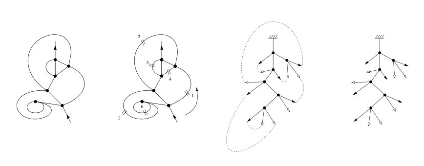
<figcaption class="paper-figure-caption"><b>Fig 1.</b> Figure 1. Construction of the blossom tree associated with a planar map with two legs and four- valent internal vertices, reproduced from Ref. [65]. Panel (a) displays the initial map. The numbers in panel (b) give the order of the allowed cuts: 1–3 occur during the first circuit, namely the first complete counterclockwise traversal of the external boundary, and 4–6 during the second. Each cut replaces an edge by a black bud and a white leaf, producing the intermediate object in panel (c). Turning the incoming leg into a leaf and the outgoing leg into the root gives the tree in panel (d). Pairing the buds and leaves in the reverse order reconstructs the original planar map.</figcaption>
</figure>
<figure class="paper-figure-card">
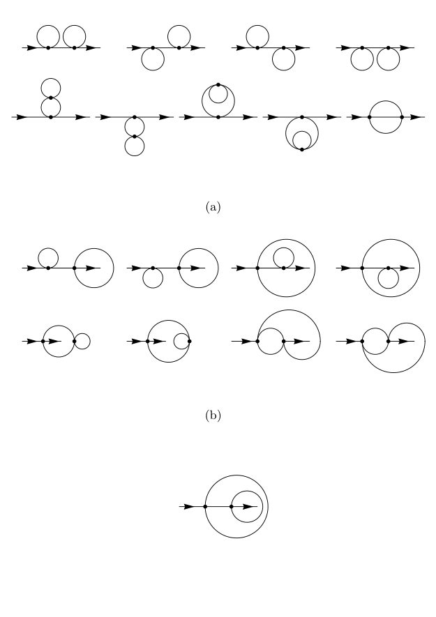
<figcaption class="paper-figure-caption"><b>Fig 2.</b> Figure 2. Connected planar maps with two legs and two tetravalent internal vertices, reproduced from Ref. [65]. The maps are classified by the geodesic distance between their marked legs: n = 0 in panel (a), n = 1 in panel (b), and n = 2 in panel (c).</figcaption>
</figure>
<figure class="paper-figure-card">
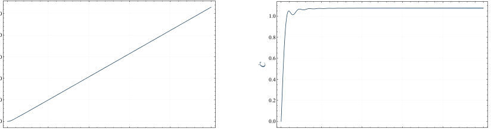
<figcaption class="paper-figure-caption"><b>Fig 3.</b> Figure 3. Spread complexity C(t) and its growth rate ˙C(t) for the quartic model at g = −1. The early-time growth is quadratic, while the late-time growth is linear.</figcaption>
</figure>
<figure class="paper-figure-card">
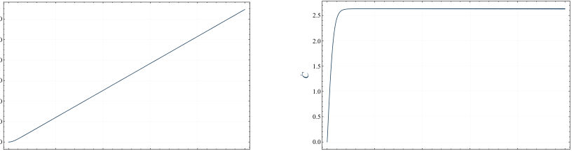
<figcaption class="paper-figure-caption"><b>Fig 4.</b> Figure 4. Spread complexity C(t) and its growth rate ˙C(t) in the double-scaled SYK model at q = 0.5. The early-time growth is quadratic, whereas the late-time growth is linear.</figcaption>
</figure>
</div>
<p><strong>Summary.</strong> This paper analyzes the spread complexity of quantum states in large-N random matrix models by focusing on the Lanczos coefficients. It derives nonlinear equations governing these coefficients using the Coulomb-gas formalism. Crucially, it establishes a deep connection showing that these coefficients generate counts of planar maps, linking quantum dynamics to combinatorics.</p>
<p><strong>Why it may be interesting.</strong> The connection between spectral properties (Lanczos coefficients) derived from complex many-body systems (RMT) and fundamental combinatorial objects (planar maps) provides a powerful, non-obvious mathematical structure applicable to understanding quantum chaos and complexity in physical systems.</p>
<details>
<summary>Detailed structure</summary>
<p><strong>Main problem.</strong> The paper investigates the physical meaning of Lanczos coefficients in the context of the spread complexity of the infinite-temperature thermofield double state within large-N random matrix theory.</p>
<p><strong>Main result.</strong> The Lanczos coefficients are shown to satisfy nonlinear 'Lanczos equations' derived from the Coulomb-gas equation, and they generate counts of planar maps related to the geodesic distance.</p>
<p><strong>Method.</strong> The analysis uses the orthogonal polynomial approach associated with the leading density of states, relating the dynamics to a three-term recurrence relation whose coefficients are the Lanczos coefficients.</p>
<p><strong>Model / system.</strong> The study focuses on the infinite-temperature thermofield double state in large-N random matrix ensembles, which is analyzed via its associated orthogonal polynomials and the resulting Krylov dynamics.</p>
<p><strong>Key observables.</strong> Spread complexity, Lanczos coefficients ($a_n, b_n$), and the leading density of states ($
ho_0(E)$).</p>
<p><strong>Important parameters / regimes.</strong> Large-N limit, Krylov index, and the structure of the matrix potential (e.g., quartic potential).</p>
<p><strong>Assumptions / limitations.</strong> The analysis relies on the large-N limit and the mapping of dynamics to the Krylov chain structure.</p>
<p><strong>Figures summary.</strong> Not specified in the notes, but the text references figures illustrating the bijection between coefficients and planar maps.</p>
<p><strong>Paper structure.</strong> The paper proceeds by establishing the connection between the dynamics (survival amplitude $S(t)$) and the orthogonal polynomial structure, deriving the recurrence relations, finding the nonlinear 'Lanczos equations' from the Coulomb-gas equation, and finally interpreting these coefficients combinatorially via planar maps.</p>
</details>
<details>
<summary>Abstract</summary>
<p>We study the spread complexity of the infinite-temperature thermofield double state in large-$N$ random matrix theory and investigate the physical meaning of its Lanczos coefficients. The leading density of states defines a family of orthogonal polynomials whose recursion coefficients coincide with the Lanczos coefficients of the associated Krylov dynamics. Starting from the Coulomb-gas equation, we derive a pair of nonlinear relations for these coefficients, which we call the Lanczos equations. Since the Lanczos coefficients approach constants at large Krylov index, the spread complexity grows linearly at late times. We further show that the Lanczos coefficients can be interpreted as generating functions for planar maps. For an even potential, the difference $b_{n+1}^2-b_n^2$ generates maps with two legs whose marked legs are separated by the exact geodesic distance $n$. Consequently, the spread complexity acceleration operator equals twice the geodesic generating operator. We illustrate these results in the quartic matrix model, where the expansion in the quartic coupling counts tetravalent planar maps, and in the double-scaled Sachdev--Ye--Kitaev model, where the auxiliary Hilbert space can be identified with the physical chord Hilbert space.</p>
</details>
<p><sub><a href="#top">↑ back to top</a></sub></p>

<p><a id="paper-2608.17716"></a></p>
<h3 id="atomistic-structure-generation-and-neural-network-screening-of-hard-carbons-to-identify-high-capacity-sodium-storage"><a href="http://arxiv.org/abs/2608.17716v1">Atomistic Structure Generation and Neural-Network Screening of Hard Carbons to Identify High-Capacity Sodium Storage</a></h3>
<p><strong>Authors:</strong> Harry Mclean, Aiden Daniel Emery, Theodore Thomas Walton, Ned Thaddeus Taylor, Steven Paul Hepplestone<br>
<strong>Type:</strong> theory · <strong>Category:</strong> disordered systems and neural networks · <strong>PDF:</strong> <a href="https://arxiv.org/pdf/2608.17716v1">https://arxiv.org/pdf/2608.17716v1</a><br>
<strong>Analysis basis:</strong> full PDF text, analyzed in chunks</p>
<div class="figure-strip-hint">↔ Scroll figures horizontally</div>
<div class="paper-figures-scroll">
<figure class="paper-figure-card">
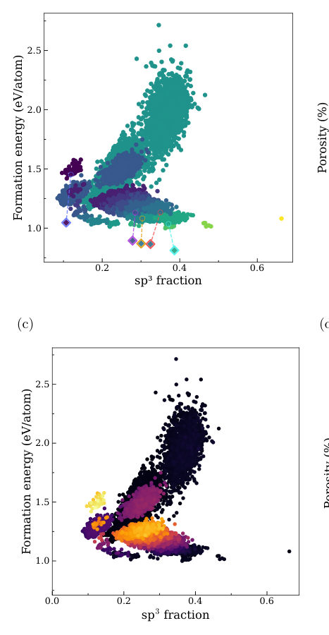
<figcaption class="paper-figure-caption"><b>Fig 1.</b> FIG. 1: Structural and energetic analysis of hard carbons generated using AGOX and</figcaption>
</figure>
<figure class="paper-figure-card">
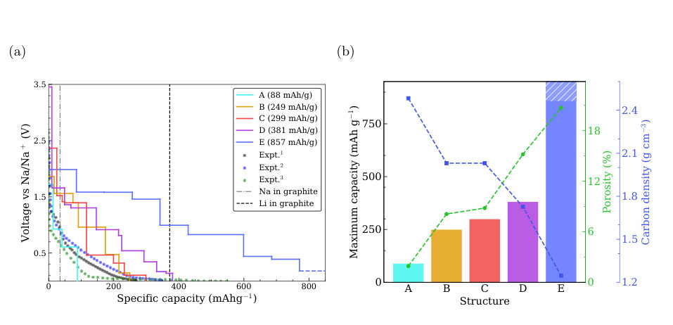
<figcaption class="paper-figure-caption"><b>Fig 2.</b> FIG. 2: (a) Computed sodium-filling voltage profiles for structures A–E compared with</figcaption>
</figure>
<figure class="paper-figure-card">
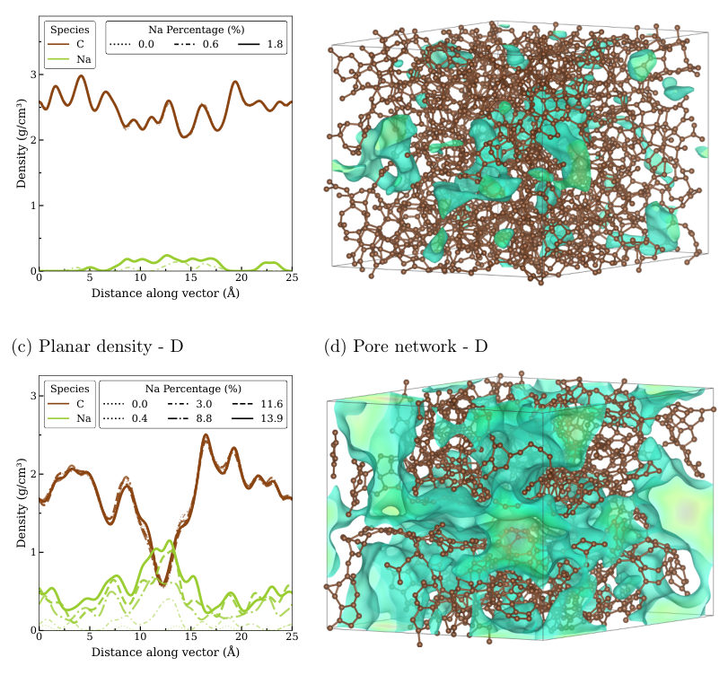
<figcaption class="paper-figure-caption"><b>Fig 3.</b> FIG. 3: Density profile of hard carbon structures (a) A and (c) D for different levels of</figcaption>
</figure>
<figure class="paper-figure-card">

<figcaption class="paper-figure-caption"><b>Fig 4.</b> FIG. 4 presents the RAFFLE 2-body distribution functions for C–C, C–Na, and Na–Na</figcaption>
</figure>
<figure class="paper-figure-card">
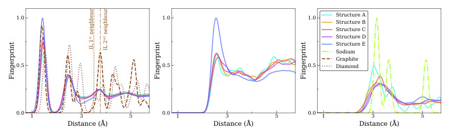
<figcaption class="paper-figure-caption"><b>Fig 5.</b> FIG. 4: 2-body distribution functions for (a) C–C, (b) C–Na, and (c) Na–Na for structures</figcaption>
</figure>
</div>
<p><strong>Summary.</strong> This work addresses the challenge of designing high-capacity hard carbon anodes for sodium-ion batteries by creating a scalable computational workflow. It combines machine-learned potentials with structure generation to build a massive library of realistic carbon models. Crucially, it trains a neural network to predict the sodium storage capacity directly from the structure, allowing for rapid screening and the identification of optimal material designs.</p>
<p><strong>Why it may be interesting.</strong> The application of machine learning (NNs) to predict macroscopic material properties (electrochemical capacity) from complex, disordered atomic structures is a prime example of ML-physics in action, relevant to understanding emergent behavior in disordered systems.</p>
<details>
<summary>Detailed structure</summary>
<p><strong>Main problem.</strong> To develop a fundamental understanding and systematic design principles for high-capacity hard carbon anodes for sodium-ion batteries, overcoming the limitations of conventional atomistic methods in modeling complex, large-scale, disordered structures.</p>
<p><strong>Main result.</strong> The developed framework successfully links hard carbon microstructure (density, porosity, pore morphology) to sodium-storage performance, identifying high-capacity candidates exceeding 800 mAh g-1.</p>
<p><strong>Method.</strong> The study combines machine-learned interatomic potentials with a structure-generation framework, and then trains a lightweight neural-network surrogate to predict electrochemical capacity directly from the host structure.</p>
<p><strong>Model / system.</strong> The system is hard carbon, a disordered carbon material used as an anode for sodium-ion batteries. The modeling involves generating large libraries of structures using MLIPs and predicting performance using a trained Neural Network (NN) surrogate model.</p>
<p><strong>Key observables.</strong> Sodium storage capacity (mAh g-1), voltage profiles (V vs Na/Na+), carbon density, and $sp^3$ bonding fractions.</p>
<p><strong>Important parameters / regimes.</strong> Porosity, carbon density (especially the threshold $\leq 2 	ext{ g cm}^{-3}$), and the $sp^3$ fraction are key structural descriptors.</p>
<p><strong>Assumptions / limitations.</strong> The primary assumption is that the NN surrogate model can accurately predict the complex electrochemical performance based solely on structural descriptors, bypassing computationally prohibitive full intercalation calculations for the entire library.</p>
<p><strong>Figures summary.</strong> Not specified, but the notes reference structural property summaries and validation plots comparing NN predictions to explicit calculations.</p>
<p><strong>Paper structure.</strong> The paper follows a structure of (1) defining the physical problem and limitations of current methods, (2) proposing a combined MLIP/RAFFLE workflow for structure generation, (3) developing and training a NN surrogate model using structural and geometric descriptors, and (4) validating the model by predicting and identifying high-performance candidates.</p>
</details>
<details>
<summary>Abstract</summary>
<p>Hard carbons are established anodes for lithium-ion batteries and leading candidates for sodium-ion batteries, yet their electrochemical performance is governed by a heterogeneous network of graphitic domains, defects, and nanopores that conventional atomistic methods cannot model at the required length scales. We combine universal machine-learned interatomic potentials with the RAFFLE structure-generation framework to construct 13,096 realistic hard carbon models containing up to 4,378 atoms, matching experimentally measured densities, porosities, and sp$^2$/sp$^3$ bonding fractions. Explicit sodium intercalation of representative structures reproduces the characteristic sloping-to-plateau voltage profiles, revealing that capacity increases with decreasing carbon density and increasing porosity. To screen the full library, we train a lightweight neural-network surrogate that predicts capacity directly from the host using frozen universal-potential descriptors augmented by geometric void features. The surrogate identifies high-capacity candidates exceeding 800 mAh g$^{-1}$, which are validated by full intercalation calculations. This scalable framework links hard carbon microstructure to sodium-storage performance and provides atomistic design principles for high-capacity anodes. More broadly, the workflow enables systematic exploration of synthesis-dependent amorphous microstructures, including precursor chemistry, pyrolysis, heteroatom doping, and pore engineering, providing a route toward atomistically informed hard carbon design.</p>
</details>
<p><sub><a href="#top">↑ back to top</a></sub></p>

<p><a id="paper-2608.17745"></a></p>
<h3 id="bridging-ambient-and-high-pressure-superconductivity-in-lamath593mathlnnimath594mathomath595math-films"><a href="http://arxiv.org/abs/2608.17745v1">Bridging ambient- and high-pressure superconductivity in La$_2$LnNi$_2$O$_7$ films</a></h3>
<p><strong>Authors:</strong> Motoki Osada, Chieko Terakura, Shusaku Imajo, Jean-Baptiste Morée, Akiko Kikkawa, Masamichi Nakajima, Hsiao-Yi Chen, Yusuke Nomura, Koichi Kindo, Ryotaro Arita, Yoshinori Tokura, Atsushi Tsukazaki<br>
<strong>Type:</strong> both · <strong>Category:</strong> strongly correlated electrons · <strong>PDF:</strong> <a href="https://arxiv.org/pdf/2608.17745v1">https://arxiv.org/pdf/2608.17745v1</a><br>
<strong>Analysis basis:</strong> full PDF text, analyzed in chunks</p>
<div class="figure-strip-hint">↔ Scroll figures horizontally</div>
<div class="paper-figures-scroll">
<figure class="paper-figure-card">
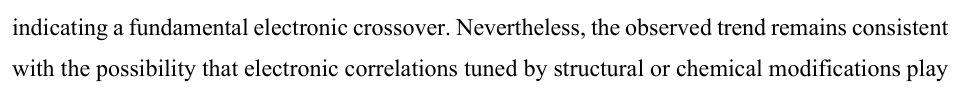
<figcaption class="paper-figure-caption"><b>Fig 1.</b> Figure 2f and g show the in-plane upper critical field Hc2||ab and out-of-plane upper critical field</figcaption>
</figure>
<figure class="paper-figure-card">
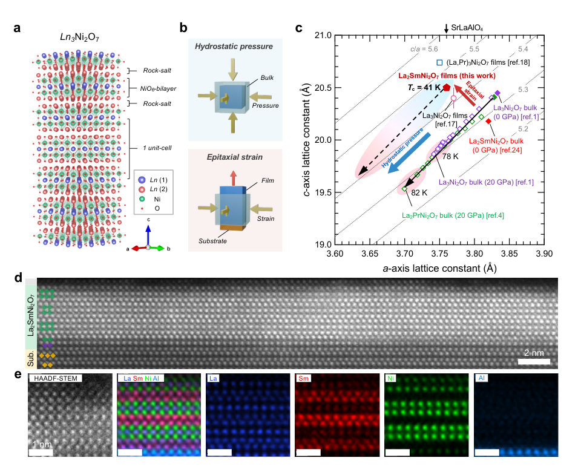
<figcaption class="paper-figure-caption"><b>Fig 2.</b> Fig. 1 | Crystalline lattices of superconducting bilayer nickelates and characterization of La2SmNi2O7 thin films. a, crystal structure of La2LnNi2O7. b, top and bottom panel shows sample schematics under hydrostatic pressure (top) and epitaxial strain (bottom). c, the relation between c-axis and a-axis lattice constants for bulk values in previous studies1,4,24 and the value of thin films17,18. Broken lines correspond to the c/a ratio. Arrows indicate the lattice squeezing under pressure. Note that two schematic trajectories are expected for pressurized films: evolution at nearly constant c/a, and convergence of c/a toward ~5.3 due to substrate constraint. d, high- resolution HAADF-STEM...</figcaption>
</figure>
<figure class="paper-figure-card">
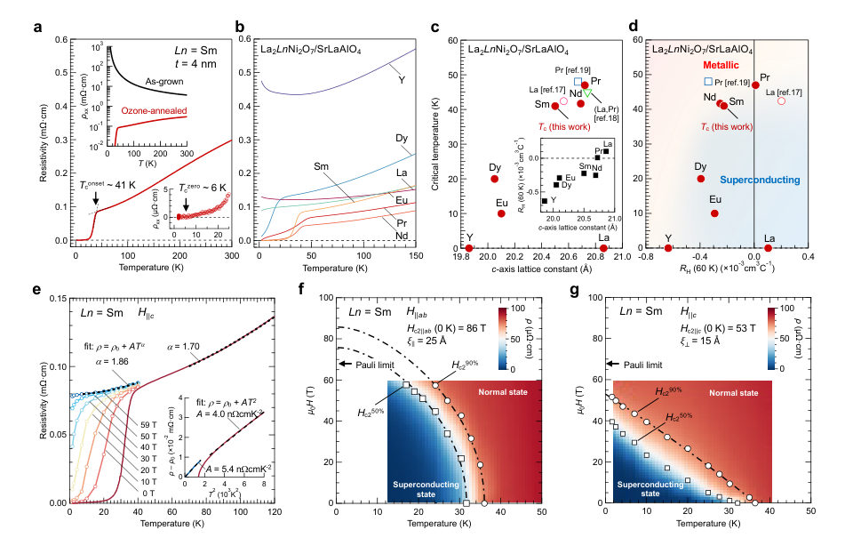
<figcaption class="paper-figure-caption"><b>Fig 3.</b> Fig. 2 | Superconductivity of La2LnNi2O7 films at ambient pressure. a, Temperature dependence of resistivity of La2SmNi2O7 film. The top inset shows the logarithmic scale of resistivity of the film before and after ozone annealing. The bottom inset shows a low-temperature resistivity of the film indicating zero resistance at approximately 6 K. b, Temperature dependence of resistivity for the La2LnNi2O7 films (Ln = La, Pr, Nd, Sm, Eu, Dy, Y). c, Superconducting transition temperature as a function of c-axis lattice constant. Closed red circles are the data in this study and open symbols are the data in previous studies17,18,19. The inset shows the Hall coefficient at 60 K, RH (60 K), as a...</figcaption>
</figure>
<figure class="paper-figure-card">
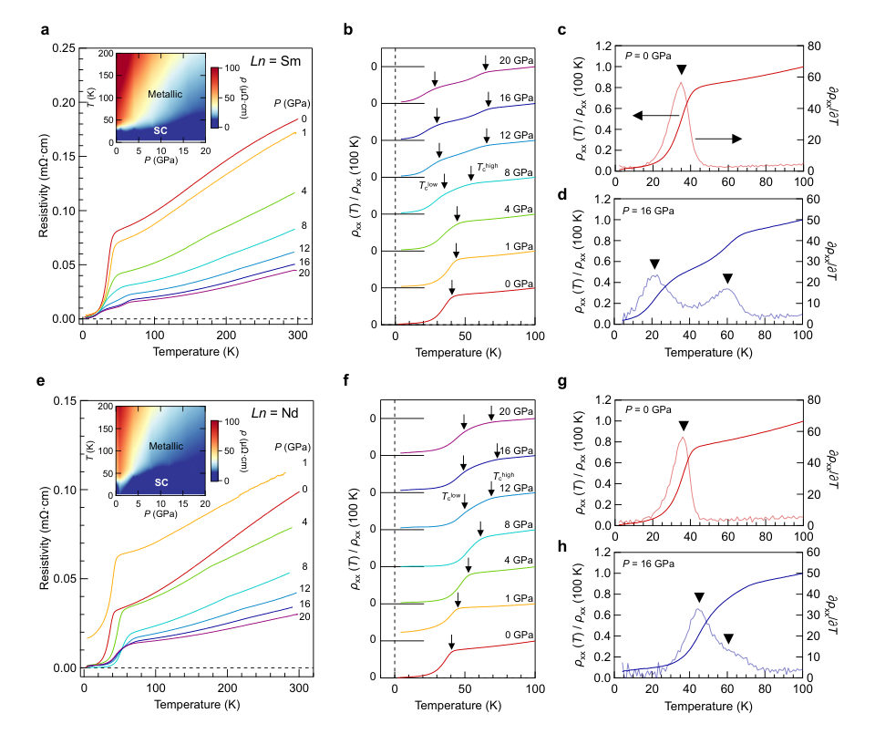
<figcaption class="paper-figure-caption"><b>Fig 4.</b> Fig. 3 | Superconductivity of La2LnNi2O7 film under high pressure. a, Temperature dependence of resistivity under high pressure up to 20 GPa for Ln = Sm. The inset is a color map of resistivity as a function of temperature and pressure. b, The magnified resistivity data below 100 K for Ln = Sm. The arrows correspond to the transition temperature. c and d, The normalized resistivity at 100 K (left axis) and the temperature-dependent deviation of resistivity (right axis) of La2SmNi2O7 films under 0 and 16 GPa, respectively. Triangles indicate resistive transitions. e, Temperature dependence of resistivity under high pressure up to 20 GPa for Ln = Nd. f, The magnified resistivity data below...</figcaption>
</figure>
<figure class="paper-figure-card">
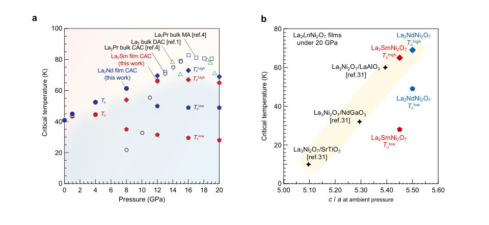
<figcaption class="paper-figure-caption"><b>Fig 5.</b> Fig. 4 | Pressure phase diagram of superconducting La2LnNi2O7 films. a, Transition temperature of La2SmNi2O7 and La2NdNi2O7 films as a function of pressure. Closed symbols are the data in this study and open symbols are that in previous studies1,4. DAC, CAC, and MA denote a diamond-anvil cell, cubic-anvil cell, and multi-anvil, respectively. b, The critical temperatures of Tchigh (closed diamonds) and Tclow (closed pentagons) for Ln = Sm (red markers) and Nd (blue markers) under 20 GPa as a function of ambient-pressure c/a ratios. Diamonds (black markers) are the data of La3Ni2O7 films grown on SrTiO3, NdGaO3, and LaAlO3 substrates under 20 GPa (Ref.31).</figcaption>
</figure>
</div>
<p><strong>Summary.</strong> This study systematically investigates how superconductivity in nickelate films is affected by external pressure and chemical substitution. By combining high-pressure/high-field transport measurements with DFT calculations, the authors establish a strong correlation between lattice structure, orbital energy levels, and the enhancement of the superconducting critical temperature.</p>
<p><strong>Why it may be interesting.</strong> The work provides a detailed, multi-faceted approach linking macroscopic transport measurements (P, B) to microscopic electronic structure calculations (DFT, Wannier orbitals), which is highly relevant for understanding correlated electron behavior in novel superconducting materials.</p>
<details>
<summary>Detailed structure</summary>
<p><strong>Main problem.</strong> The study aims to bridge the understanding of high-temperature superconductivity in bilayer nickelates ($ ext{La}_2   ext{LnNi}_2 ext{O}_7$) between ambient and high-pressure regimes.</p>
<p><strong>Main result.</strong> Superconductivity is enhanced under high pressure (up to 73 K at 16 GPa), and both ambient and high-pressure $T_c$ correlate with the evolution of normal-state transport behavior ($
ho \propto T^a$) and structural changes.</p>
<p><strong>Method.</strong> The research combines experimental measurements (resistivity under high magnetic fields and high pressure) with theoretical calculations using Density Functional Theory (DFT) to model the electronic structure.</p>
<p><strong>Model / system.</strong> The system is the bilayer nickelate $   ext{La}_2   ext{LnNi}_2 ext{O}_7$ film. The electronic structure is modeled using a low-energy effective Hamiltonian derived from Wannier orbitals spanning the $   ext{Ni}3d$ and $    ext{O}2p$ bands, focusing on the interplay between $d_{x^2-y^2}$ and $d_{3z^2-r^2}$ orbitals.</p>
<p><strong>Key observables.</strong> Superconducting critical temperature ($T_c$), normal-state resistivity exponent ($a$), lattice parameters ($c/a$ ratio), and orbital energy differences ($\Delta E$).</p>
<p><strong>Important parameters / regimes.</strong> High pressures (up to 20 GPa), high magnetic fields (up to 59 T), and the lanthanide element ($ ext{Ln}$) substitution.</p>
<p><strong>Assumptions / limitations.</strong> The analysis assumes that structural changes (pressure or substitution) directly modulate the electronic correlations governing superconductivity, as captured by the DFT model.</p>
<p><strong>Figures summary.</strong> Figures illustrate the structural dependence of $T_c$ on lattice constants, the evolution of the normal-state resistivity exponent ($a$) with pressure, and DFT results showing band structures and Fermi surfaces under different compression levels.</p>
<p><strong>Paper structure.</strong> The paper systematically investigates transport properties under extreme conditions (high P/B) and uses DFT to model the underlying electronic physics, correlating changes in orbital character and lattice structure to the superconducting transition temperature.</p>
</details>
<details>
<summary>Abstract</summary>
<p>The discovery of high critical-temperature $T_{\mathrm{c}}$ superconductivity near 80 K in bilayer nickelates under high pressure has sparked extensive studies. While superconductivity exceeding 40 K was subsequently discovered at ambient pressure in compressively strained films, the relationship between ambient- and high-pressure regimes remains an open question. Here we present a systematic investigation of superconductivity in compressively strained La$_2$LnNi$_2$O$_7$ films (Ln = lanthanides) at ambient and high pressures. The normal-state resistivity at ambient pressure, revealed by suppressing superconductivity with magnetic fields of 59 T, tends toward $T^2$ behaviour. Under high pressure in a cubic-anvil cell, $T_{\mathrm{c}}$ was enhanced from 41-42 K at ambient pressure to 67-73 K at 16 GPa. On the other hand, lattice compression induced by Ln substitution, which may mimic effects of pressure, lowers $T_{\mathrm{c}}$. In both cases, $T_{\mathrm{c}}$ correlates with the evolution of normal-state transport between $T^2$ and $T$-linear behaviour, offering insight into the interplay between lattice structure and superconductivity in bilayer nickelates.</p>
</details>
<p><sub><a href="#top">↑ back to top</a></sub></p>

<p><a id="paper-2608.17118"></a></p>
<h3 id="entanglement-assisted-quantum-math615math-locally-recoverable-codes"><a href="http://arxiv.org/abs/2608.17118v1">Entanglement assisted quantum $(r,δ)$-locally recoverable codes</a></h3>
<p><strong>Authors:</strong> Carlos Galindo, Fernando Hernando, Helena Martín-Cruz, Ryutaroh Matsumoto<br>
<strong>Type:</strong> theory · <strong>Category:</strong> quantum information and computing · <strong>PDF:</strong> <a href="https://arxiv.org/pdf/2608.17118v1">https://arxiv.org/pdf/2608.17118v1</a><br>
<strong>Analysis basis:</strong> full PDF text, analyzed in chunks</p>
<div class="figure-strip-hint">↔ Scroll figures horizontally</div>
<div class="paper-figures-scroll">
<figure class="paper-figure-card">
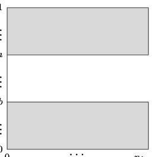
<figcaption class="paper-figure-caption"><b>Fig 1.</b> Figure 1. Sets ∆a,b and ∆σ a,b in Proposition 4.1</figcaption>
</figure>
</div>
<p><strong>Summary.</strong> This paper introduces the framework for entanglement-assisted quantum locally recoverable codes, generalizing existing quantum error-correcting codes. It derives necessary and sufficient conditions for these codes and constructs optimal examples using established classical code families. This advances the theoretical understanding of quantum information protection against localized erasures.</p>
<p><strong>Why it may be interesting.</strong> This work provides advanced theoretical tools for quantum information security, directly relevant to designing robust quantum communication channels against localized noise.</p>
<details>
<summary>Detailed structure</summary>
<p><strong>Main problem.</strong> The paper aims to develop and characterize entanglement-assisted quantum $(r, \delta)$-locally recoverable codes (EA $(r, \delta)$-QLRCs).</p>
<p><strong>Main result.</strong> The authors establish necessary and sufficient conditions for these codes and construct optimal pure EA $(r, \delta)$-QLRCs using known classical code families like BCH and J-affine variety codes.</p>
<p><strong>Method.</strong> The methodology involves establishing theoretical bounds, deriving necessary and sufficient conditions based on algebraic structures (Euclidean/Hermitian inner products), and providing explicit constructions parameterized by classical code properties.</p>
<p><strong>Model / system.</strong> The model is Quantum Error-Correcting Codes (QECCs) designed to protect quantum states from local erasures, generalized by incorporating entanglement assistance via receiver-held qudits.</p>
<p><strong>Key observables.</strong> Code parameters like $[[n, k, d; c]]_q$, and the locality parameters $(r, \delta)$ defining the error correction capability.</p>
<p><strong>Important parameters / regimes.</strong> The locality parameters $(r, \delta)$, the number of entangled pairs ($c$), and the underlying finite field structure ($\mathbb{F}_q$).</p>
<p><strong>Assumptions / limitations.</strong> The local recovery operation is assumed to be assisted by receiver-held qudits that remain unaffected by erasures.</p>
<p><strong>Paper structure.</strong> The paper builds from background material on classical and quantum LRCs, formalizes the EA $(r, \delta)$-QLRC framework, derives necessary and sufficient conditions, and concludes with explicit constructions of optimal codes from various classical code families.</p>
</details>
<details>
<summary>Abstract</summary>
<p>Quantum $(r,δ)$-locally recoverable codes are quantum error-correcting codes capable of correcting $δ-1$ qudit erasures within one subset of qudits of cardinality at most $r+δ-1$. In this paper, we introduce the more general framework of entanglement-assisted quantum $(r,δ)$-locally recoverable codes, assuming that the local recovery operation is assisted by receiver-held qudits that remain unaffected by erasures.   We establish necessary and sufficient conditions for these codes to satisfy this property. For codes derived from Hermitian or Euclidean constructions, we establish connections between entanglement-assisted quantum and classical notions of $(r,δ)$-local recoverability, and derive a Singleton-like bound. Furthermore, we construct optimal pure entan-gle-ment-assisted quantum $(r,δ)$-locally recoverable codes from several families of classical codes, including bivariate $J$-affine variety codes, BCH codes, and homothetic-BCH codes.</p>
</details>
<p><sub><a href="#top">↑ back to top</a></sub></p>

<p><a id="paper-2608.17376"></a></p>
<h3 id="exact-certification-of-a-positive-order-renyi-additivity-violation-for-an-explicit-channel-pair"><a href="http://arxiv.org/abs/2608.17376v1">Exact certification of a positive-order Rényi additivity violation for an explicit channel pair</a></h3>
<p><strong>Authors:</strong> Artus Krohn-Grimberghe<br>
<strong>Type:</strong> theory · <strong>Category:</strong> quantum information and computing · <strong>PDF:</strong> <a href="https://arxiv.org/pdf/2608.17376v1">https://arxiv.org/pdf/2608.17376v1</a><br>
<strong>Analysis basis:</strong> full PDF text, analyzed in chunks</p>
<div class="figure-strip-hint">↔ Scroll figures horizontally</div>
<div class="paper-figures-scroll">
<figure class="paper-figure-card">
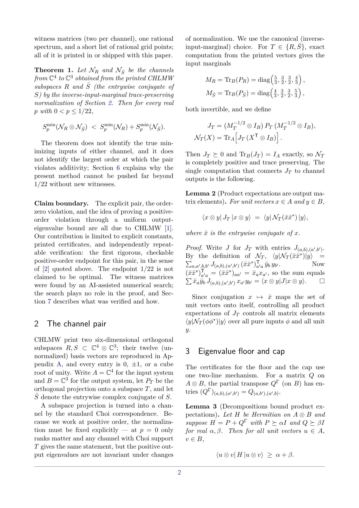
<figcaption class="paper-figure-caption"><b>Fig 1.</b> Low-resolution page preview, page 2</figcaption>
</figure>
<figure class="paper-figure-card">
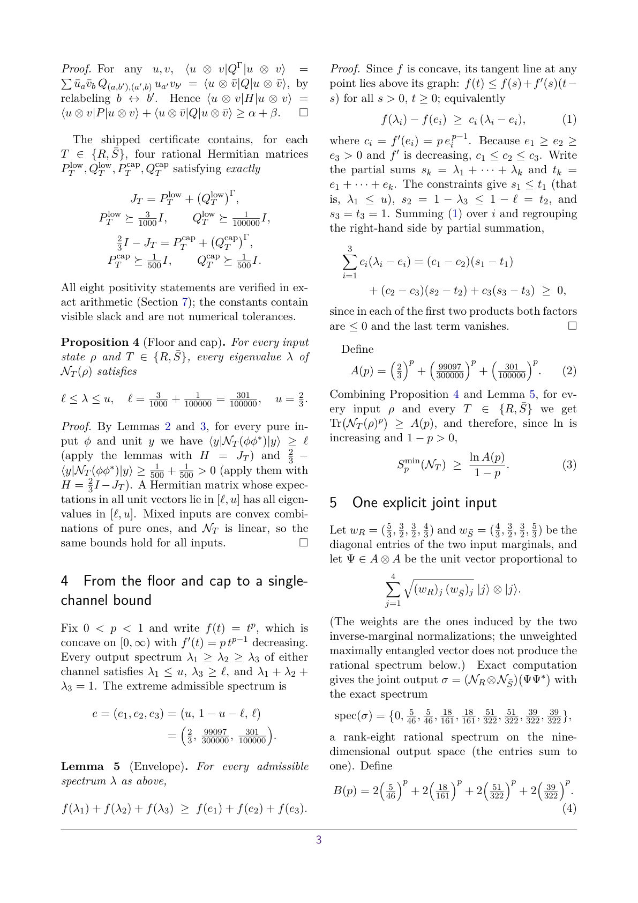
<figcaption class="paper-figure-caption"><b>Fig 2.</b> Low-resolution page preview, page 3</figcaption>
</figure>
<figure class="paper-figure-card">
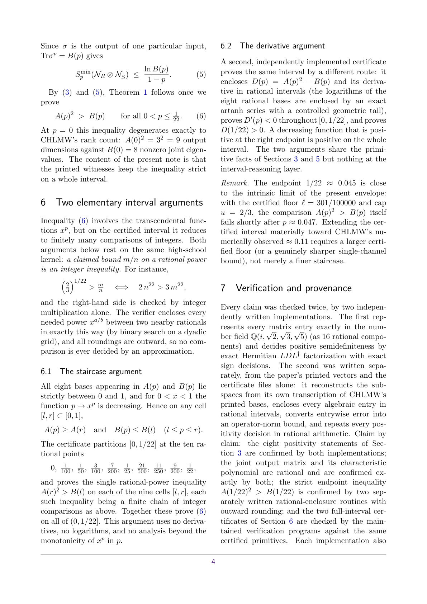
<figcaption class="paper-figure-caption"><b>Fig 3.</b> Low-resolution page preview, page 4</figcaption>
</figure>
<figure class="paper-figure-card">
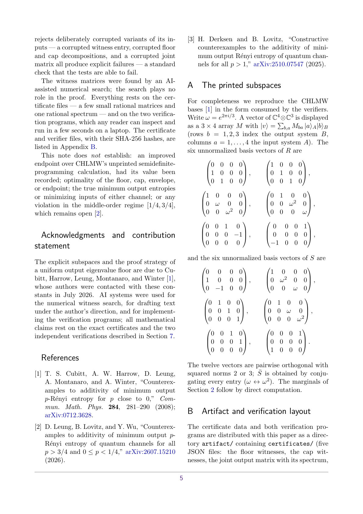
<figcaption class="paper-figure-caption"><b>Fig 4.</b> Low-resolution page preview, page 5</figcaption>
</figure>
<figure class="paper-figure-card">
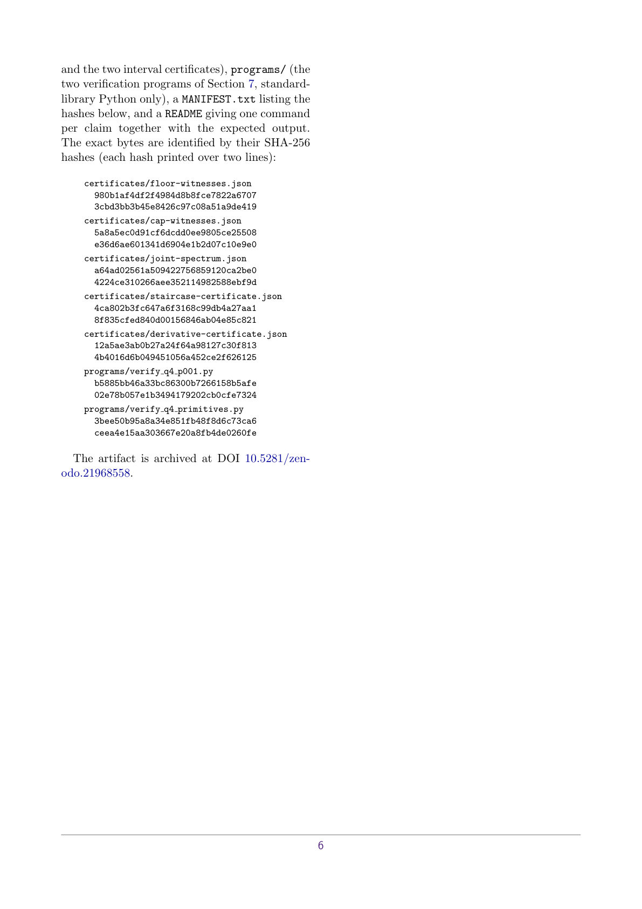
<figcaption class="paper-figure-caption"><b>Fig 5.</b> Low-resolution page preview, page 6</figcaption>
</figure>
</div>
<p><strong>Summary.</strong> This paper rigorously proves a positive-order violation of Rényi additivity for a known pair of quantum channels. By developing two independent, computationally verifiable methods, the authors establish a certified interval ($0 < p \le 1/22$) for this violation. This work significantly advances the theoretical understanding of quantum channel properties by providing a concrete, checkable mathematical certificate.</p>
<p><strong>Why it may be interesting.</strong> This work provides a highly rigorous, computationally verifiable certificate for a fundamental quantum information phenomenon (Rényi additivity violation), which is crucial for understanding the limits of quantum channel capacity.</p>
<details>
<summary>Detailed structure</summary>
<p><strong>Main problem.</strong> To provide the first printed, computer-verifiable certified positive-order endpoint for the violation of Rényi additivity for a specific pair of quantum channels.</p>
<p><strong>Main result.</strong> The authors prove a strict violation of Rényi additivity, $S_p^{\min}(N_R\otimes N_{ar S}) < S_p^{\min}(N_R)+S_p^{\min}(N_{ar S})$, for the interval $0 < p \le 1/22$.</p>
<p><strong>Method.</strong> The proof uses elementary, certificate-based methods, including staircase arguments and derivative analysis, relying on comparisons of integers to establish the required inequality.</p>
<p><strong>Model / system.</strong> The study concerns two explicit quantum channels, $N_R$ and $ar{N}_S$, acting on specific subspaces derived from the CHLMW example.</p>
<p><strong>Key observables.</strong> Minimum output Rényi entropy, $S_{\min}^p(N) = \min_{
ho} S_p(N(
ho))$, and the additivity inequality.</p>
<p><strong>Important parameters / regimes.</strong> The violation is certified for the order $0 < p \le 1/22$.</p>
<p><strong>Assumptions / limitations.</strong> The proof relies on establishing the inequality $A(p)^2 > B(p)$ for the specified interval, and the endpoint $1/22$ is not claimed to be optimal.</p>
<p><strong>Paper structure.</strong> The paper establishes the problem by referencing previous work, then uses eigenvalue bounds and concavity arguments to set up the core inequality, which is finally proven using two independent, rigorous methods (staircase and derivative) to certify the interval $(0, 1/22]$.</p>
</details>
<details>
<summary>Abstract</summary>
<p>Cubitt, Harrow, Leung, Montanaro, and Winter (CHLMW) exhibited an explicit pair of quantum channels whose minimum output Rényi entropy is nonadditive at order zero, and reported numerical violations at positive orders close to zero. Their paper states that a semidefinite-programming argument yields a rigorous positive-order interval for the same example, without printing the endpoint or a verifiable certificate; a recent paper by Leung, Lovitz, and Wu records that for this pair "no rigorous endpoint was obtained". We close that gap for the trace-preserving normalization of the printed pair fixed in Section 2. Small rational witness matrices prove that every output of either channel has all eigenvalues between $301/100000$ and $2/3$; a single explicit entangled input has an exact rational joint output spectrum of rank eight; and two independent elementary interval arguments turn these three facts into a proof of strict additivity violation, $S_p^{\min}(\mathrm{N}_R\otimes\mathrm{N}_{\bar S}) < S_p^{\min}(\mathrm{N}_R)+S_p^{\min}(\mathrm{N}_{\bar S}),$ for every real order $0<p\le 1/22$. Every step of the verification reduces to comparisons of integers, and the complete certificate is a few small rational matrices that a reader can check with a short program -- or, for any single order, by hand. To our knowledge, consistent with the assessment of Leung, Lovitz, and Wu, this is the first printed, computer-verifiable certified positive-order endpoint for this explicit pair. We claim no novelty for the phenomenon or for the eigenvalue-floor mechanism, both due to CHLMW, and no optimality of the endpoint.</p>
</details>
<p><sub><a href="#top">↑ back to top</a></sub></p>

<p><a id="paper-2608.17155"></a></p>
<h3 id="fixed-particle-number-optimizers-for-the-lieb-oxford-inequality"><a href="http://arxiv.org/abs/2608.17155v1">Fixed-particle-number optimizers for the Lieb--Oxford inequality</a></h3>
<p><strong>Authors:</strong> Matthew Rosenzweig<br>
<strong>Type:</strong> theory · <strong>Category:</strong> statistical mechanics · <strong>PDF:</strong> <a href="https://arxiv.org/pdf/2608.17155v1">https://arxiv.org/pdf/2608.17155v1</a><br>
<strong>Analysis basis:</strong> full PDF text, analyzed in chunks</p>
<div class="figure-strip-hint">↔ Scroll figures horizontally</div>
<div class="paper-figures-scroll">
<figure class="paper-figure-card">
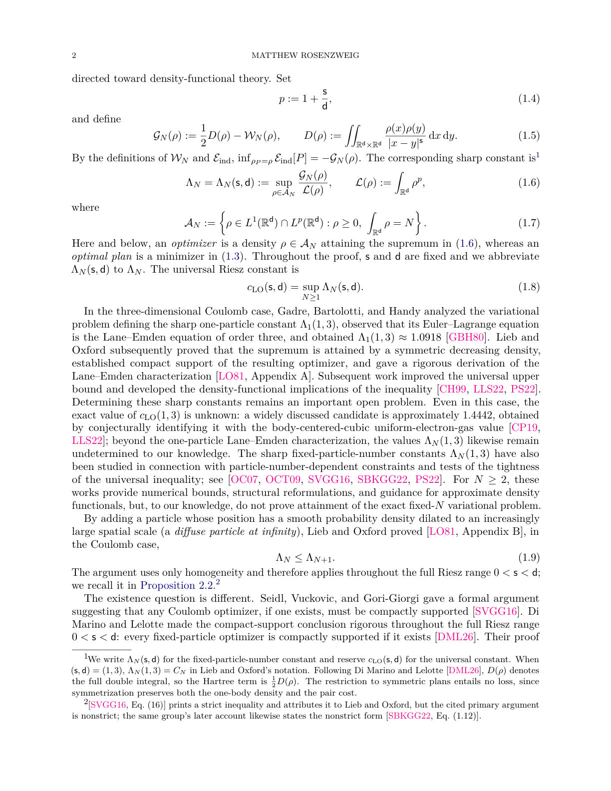
<figcaption class="paper-figure-caption"><b>Fig 1.</b> Low-resolution page preview, page 2</figcaption>
</figure>
<figure class="paper-figure-card">
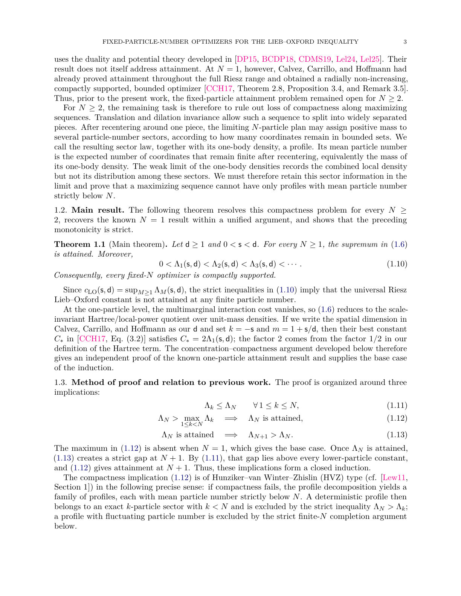
<figcaption class="paper-figure-caption"><b>Fig 2.</b> Low-resolution page preview, page 3</figcaption>
</figure>
<figure class="paper-figure-card">

<figcaption class="paper-figure-caption"><b>Fig 3.</b> Low-resolution page preview, page 4</figcaption>
</figure>
<figure class="paper-figure-card">

<figcaption class="paper-figure-caption"><b>Fig 4.</b> Low-resolution page preview, page 5</figcaption>
</figure>
<figure class="paper-figure-card">

<figcaption class="paper-figure-caption"><b>Fig 5.</b> Low-resolution page preview, page 6</figcaption>
</figure>
</div>
<p><strong>Summary.</strong> This paper rigorously solves for the optimal fixed-particle-number constant in the Riesz Lieb--Oxford inequality. By establishing strict monotonicity ($\Lambda_{N+1} > \Lambda_N$) through advanced techniques involving concentration-compactness, it proves that the optimal constant is never achieved at any finite particle number. This provides a deep mathematical understanding of the scaling behavior of quantum many-body energy bounds.</p>
<p><strong>Why it may be interesting.</strong> The rigorous mathematical treatment of optimal constants in many-body quantum systems, particularly those involving interaction potentials like the Riesz potential, is crucial for understanding ground state properties in quantum matter.</p>
<details>
<summary>Detailed structure</summary>
<p><strong>Main problem.</strong> The paper determines the optimal fixed-particle-number constant $\Lambda_N(s, d)$ in the Riesz Lieb--Oxford inequality.</p>
<p><strong>Main result.</strong> It proves that $\Lambda_N$ is attained for all $N \ge 1$ and establishes strict monotonicity: $\Lambda_1 < \Lambda_2 < \Lambda_3 < \cdots$.</p>
<p><strong>Method.</strong> The proof combines grand-canonical concentration--compactness techniques with a strict one-particle extension, forming an inductive argument.</p>
<p><strong>Model / system.</strong> The analysis concerns symmetric probability measures $P$ on $(\mathbb{R}^d)^N$, relating the indirect Riesz energy $   ext{Eind}[P]$ to the multimarginal optimal-transport cost $W_N(
ho)$.</p>
<p><strong>Key observables.</strong> The optimal constant $\Lambda_N(s, d)$, the one-body density $
ho$, and the associated energy functionals $G_N(
ho)$ and $L(
ho)$.</p>
<p><strong>Important parameters / regimes.</strong> Spatial dimension $d \ge 1$, interaction exponent $0 < s < d$, and the fixed particle number $N \ge 1$.</p>
<p><strong>Assumptions / limitations.</strong> The analysis relies on established results like the compact-support theorem of Di Marino and Lelotte, and the ability to analyze maximizing sequences via recentering.</p>
<p><strong>Paper structure.</strong> The structure follows an inductive proof: first establishing attainment for fixed $N$, then using the compact-support theorem to prove the strict inequality $\Lambda_{N+1} > \Lambda_N$, thereby closing the induction from $N=1$.</p>
</details>
<details>
<summary>Abstract</summary>
<p>Let $\mathsf{d}\geq1$, $0<\mathsf{s}<\mathsf{d}$, and $N\geq1$. We prove that the optimal fixed-particle-number constant $Λ_N(\mathsf{s},\mathsf{d})$ in the Riesz Lieb--Oxford inequality is attained and that these constants are strictly increasing in $N$. The proof combines grand-canonical concentration--compactness with a strict one-particle extension. After recentering, a limiting plan arising from a maximizing sequence may assign positive probability to several particle numbers and hence be grand-canonical. A strict $N$-particle completion excludes this case, while the inequalities $Λ_N>Λ_k$ for $k<N$ exclude limits with a fixed lower particle number. Once attainment at particle number $N$ is known, the compact-support theorem of Di Marino and Lelotte arXiv:2607.11440, valid for all $0<\mathsf{s}<\mathsf{d}$, permits a non-product one-particle extension and yields $Λ_{N+1}(\mathsf{s},\mathsf{d})>Λ_N(\mathsf{s},\mathsf{d})$. Together, these implications close an induction beginning at $N=1$.</p>
</details>
<p><sub><a href="#top">↑ back to top</a></sub></p>

<p><a id="paper-2608.17239"></a></p>
<h3 id="gaussian-optimality-of-energy-constrained-one-shot-communication-through-single-mode-bosonic-gaussian-channels"><a href="http://arxiv.org/abs/2608.17239v1">Gaussian Optimality of Energy-Constrained One-Shot Communication through Single-Mode Bosonic Gaussian Channels</a></h3>
<p><strong>Authors:</strong> Se-Wan Ji<br>
<strong>Type:</strong> theory · <strong>Category:</strong> quantum information and computing · <strong>PDF:</strong> <a href="https://arxiv.org/pdf/2608.17239v1">https://arxiv.org/pdf/2608.17239v1</a><br>
<strong>Analysis basis:</strong> full PDF text, analyzed in chunks</p>
<div class="figure-strip-hint">↔ Scroll figures horizontally</div>
<div class="paper-figures-scroll">
<figure class="paper-figure-card">

<figcaption class="paper-figure-caption"><b>Fig 1.</b> Figure 1: Exact unrestricted one-shot capacity for a genuinely thermal phase-sensitive attenuator: τ = 0.60, ω = 0.40, and y = 0.30 &gt; |1 −τ|/2 = 0.20. (a) The low-energy one-quadrature branch joins water filling at ¯Nthr = 1.275. (b) The optimizing letter squeeze decreases continuously from the vacuum value toward the environment squeeze and locks to s⋆= ω at threshold. The curves use Eqs. (19)–(21); the Supplemental Material gives representative values and the numerical reproduction procedure.</figcaption>
</figure>
</div>
<p><strong>Summary.</strong> This paper rigorously proves that the one-shot Holevo capacity for single-mode bosonic Gaussian channels, subject to an energy constraint, is achieved by Gaussian states. By employing advanced optimization techniques and continuity arguments, the authors establish exact formulas for the capacity across all operational regimes. This result is vital for understanding the fundamental limits of quantum information transmission through linear bosonic channels.</p>
<p><strong>Why it may be interesting.</strong> This work provides fundamental, exact capacity formulas for continuous-variable quantum channels, which are crucial for designing high-rate quantum communication protocols in quantum optics.</p>
<details>
<summary>Detailed structure</summary>
<p><strong>Main problem.</strong> The paper aims to prove Gaussian optimality for the energy-constrained one-shot Holevo capacity of single-mode bosonic Gaussian channels.</p>
<p><strong>Main result.</strong> Gaussian optimality is proven for the energy-constrained one-shot Holevo capacity for all single-mode Gaussian channels, meaning the capacity is determined by Gaussian optimization techniques.</p>
<p><strong>Method.</strong> The proof utilizes Gaussian optimization theorems, the Matsumoto–Shimono–Winter identity, and continuity arguments across different channel regimes (low-energy vs. high-energy).</p>
<p><strong>Model / system.</strong> The system involves single-mode bosonic Gaussian channels, which model linear quantum communication links (e.g., optical or microwave). The analysis uses covariance matrices and Gaussian states.</p>
<p><strong>Key observables.</strong> Holevo capacity ($\chi$), Entanglement of Formation ($EF$), and the energy constraint ($   ext{Tr} 
ho \hat{N} \le ar{N}$).</p>
<p><strong>Important parameters / regimes.</strong> The analysis distinguishes between low-energy and high-energy (water-filling) regimes, and the result is explicitly for one-shot communication.</p>
<p><strong>Assumptions / limitations.</strong> The result is strictly for one-shot communication and does not assume additivity across multiple channel uses.</p>
<p><strong>Figures summary.</strong> Figure 1 illustrates the exact unrestricted one-shot capacity for a phase-sensitive attenuator, showing the low-energy branch joining the water-filling regime at a specific threshold.</p>
<p><strong>Paper structure.</strong> The paper builds the proof by establishing bounds ($   ext{disp} \le \chi_G \le \chi$) and then using continuity arguments across the parameter space of single-mode Gaussian channels to show the equality of these bounds.</p>
</details>
<details>
<summary>Abstract</summary>
<p>We prove Gaussian optimality for the energy-constrained one-shot Holevo capacity of single-mode bosonic Gaussian channels, including phase-sensitive channels with arbitrarily squeezed thermal noise. The unresolved regime is the low energy branch, where the Gaussian optimizer modulates only one quadrature and minimum-output-entropy arguments cannot decouple the average state from the letters. For pure one-mode dilations we retain a stronger pointwise result: moment-matched Gaussianization improves the fixed average Holevo function for every input. For mixed environments, whose purification produces a 1:2 entanglement-of-formation problem, we avoid any generic 1:2 Gaussian extremality conjecture. The optimal Gaussian letter selects an effective environmental Schmidt mode and an affine two-mode EPR witness. Its null direction is exactly the modulated quadrature, while its slope equals the negative derivative of the Gaussian letter-output entropy. This produces a supporting lower bound on the dilated entanglement of formation; Gaussian maximum entropy and concavity then give a global upper bound tangent at the Gaussian optimizer. Consequently the known Gaussian formulas for attenuating, amplifying, phase-conjugating, and additive-noise fiducial channels are exact over unrestricted ensembles at every input energy. Via the passive-input fiducial decomposition and energy-constrained continuity, the result extends to every single-mode Gaussian channel, including lower-rank canonical limits. No additivity across channel uses is assumed.</p>
</details>
<p><sub><a href="#top">↑ back to top</a></sub></p>

<p><a id="paper-2608.17109"></a></p>
<h3 id="hardness-of-approximation-for-minimum-weight-decoding-of-two-dimensional-topological-quantum-codes"><a href="http://arxiv.org/abs/2608.17109v1">Hardness of approximation for minimum-weight decoding of two-dimensional topological quantum codes</a></h3>
<p><strong>Authors:</strong> Louay Bazzi, Georges Khater<br>
<strong>Type:</strong> theory · <strong>Category:</strong> quantum information and computing · <strong>PDF:</strong> <a href="https://arxiv.org/pdf/2608.17109v1">https://arxiv.org/pdf/2608.17109v1</a><br>
<strong>Analysis basis:</strong> full PDF text, analyzed in chunks</p>
<div class="figure-strip-hint">↔ Scroll figures horizontally</div>
<div class="paper-figures-scroll">
<figure class="paper-figure-card">

<figcaption class="paper-figure-caption"><b>Fig 1.</b> Figure 1: (a) Primal and dual lattices of the [[2L2, 2, L]] toric code for L = 4. The primal lattice is shown in blue and the dual lattice in red. Vertices and edges identified with those on the opposite side are shown as unfilled circles and dashed lines, respectively. (b) Primal and dual lattices of the [[2L2 −2L + 1, 1, L]] planar surface code for L = 4. The boundary vertices are shown as squares. (c) Example of an error. The error edges and the corresponding defects are shown on the primal lattice.</figcaption>
</figure>
<figure class="paper-figure-card">

<figcaption class="paper-figure-caption"><b>Fig 2.</b> Figure 2: Symbols for atomic gadgets. (a) Clause gadget; (b) Variable gadget; (c)–(h) Wire gadgets; (i) Crossing- wire gadget; (j) Equality gadget; (k) Garbage collection gadget.</figcaption>
</figure>
<figure class="paper-figure-card">

<figcaption class="paper-figure-caption"><b>Fig 3.</b> Figure 3: General atomic gadget structure.</figcaption>
</figure>
<figure class="paper-figure-card">

<figcaption class="paper-figure-caption"><b>Fig 4.</b> Figure 4: Wire gadgets. Parts (a)–(f) show the symbols of the six variants of the wire gadget. The structure of the first variant is shown in Part (g). Its nucleus consists of a single primal defect. The two signatures of this gadget, together with their corresponding minimum-weight joins, are shown in parts (h) and (i). Both have cost 2∆. The structure of the variant shown in Part (d) is illustrated in Part (j), while its two signatures are shown in Parts (k) and (l). The remaining variants are constructed analogously.</figcaption>
</figure>
<figure class="paper-figure-card">

<figcaption class="paper-figure-caption"><b>Fig 5.</b> Figure 5: Wire example.</figcaption>
</figure>
</div>
<p><strong>Summary.</strong> This paper analyzes the computational difficulty of decoding errors in topological quantum codes like the surface and color codes. By establishing strong inapproximability results based on 3SAT hardness, it proves that finding the minimum-weight error is computationally intractable for large systems. This work sets theoretical benchmarks for the required efficiency of quantum error correction decoding algorithms.</p>
<p><strong>Why it may be interesting.</strong> The hardness results provide fundamental theoretical limits on the efficiency of quantum error correction decoding algorithms, which is crucial for designing practical fault-tolerant quantum computers.</p>
<details>
<summary>Detailed structure</summary>
<p><strong>Main problem.</strong> The paper studies the computational complexity of minimum-weight decoding for various two-dimensional topological quantum codes.</p>
<p><strong>Main result.</strong> Assuming P!=NP, the authors establish polynomial additive inapproximability gaps for decoding problems on surface codes and color codes, meaning these problems are hard to approximate efficiently.</p>
<p><strong>Method.</strong> The core method involves developing a general framework to embed logical constraints into coupled primal-dual join problems on a lattice, using reductions from 3SAT and Håstad's hardness of approximation.</p>
<p><strong>Model / system.</strong> The study focuses on topological quantum codes, specifically the surface code (planar and toric) and the 4.8.8 color code, which are used to protect quantum information.</p>
<p><strong>Key observables.</strong> The minimum weight of the Pauli error consistent with syndrome measurements, and the resulting inapproximability gaps ($\Omega(N^{1/14})$ or $\Omega(N^{1/18})$).</p>
<p><strong>Important parameters / regimes.</strong> N (the number of qubits), and the lattice structure parameters ($\Delta, \delta$) used in the geometric analysis of path weights.</p>
<p><strong>Assumptions / limitations.</strong> The results are conditional on the assumption that P != NP.</p>
<p><strong>Figures summary.</strong> Figures illustrate the geometric structures used in the proof, showing connections, double connections, and the regions (red/blue boxes) where primal and dual paths interact during the weight comparison analysis.</p>
<p><strong>Paper structure.</strong> The paper establishes NP-hardness via reductions from 3SAT, then develops a modular framework for the Minimum-Weight Join problem, and finally applies this framework to derive specific inapproximability bounds for the toric, planar, and 4.8.8 codes.</p>
</details>
<details>
<summary>Abstract</summary>
<p>Efficient decoding is essential for the practical realization of fault-tolerant quantum computers. We study the computational complexity of minimum-weight decoding for topological quantum codes. For surface codes under the depolarizing channel, we consider Minimum-Weight decoding, which seeks a minimum-weight Pauli error consistent with both the $X$- and $Z$-syndromes. For color codes under independent $X$- and $Z$-error models, we consider Separate Minimum-Weight decoding.   Assuming $P\neq NP$, we establish polynomial additive inapproximability gaps for these problems. Specifically, for the toric code and the $4.8.8$ color code on the torus, no polynomial-time algorithm can always produce a solution whose weight is within $Ω(N^{1/14})$ of the optimum, where $N$ is the number of qubits. For the planar surface code, we obtain an $Ω(N^{1/18})$ gap. Our inapproximability results use Håstad's hardness of approximation for MAX-3SAT.   Our reduction develops a general, modular framework for embedding logical constraints into coupled primal--dual join problems on a lattice. A key ingredient is a localization argument that controls unintended interactions between different parts of the construction.</p>
</details>
<p><sub><a href="#top">↑ back to top</a></sub></p>

<p><a id="paper-2608.17721"></a></p>
<h3 id="m-qam-mimo-maximum-likelihood-detection-with-qaoa-ml-rate-offline-angle-design-and-correlated-infinite-size-spin-glass-models"><a href="http://arxiv.org/abs/2608.17721v1">M-QAM MIMO Maximum-Likelihood Detection with QAOA: ML-Rate Offline Angle Design and Correlated Infinite-Size Spin-Glass Models</a></h3>
<p><strong>Authors:</strong> Burhan Gülbahar<br>
<strong>Type:</strong> theory · <strong>Category:</strong> disordered systems and neural networks · <strong>PDF:</strong> <a href="https://arxiv.org/pdf/2608.17721v1">https://arxiv.org/pdf/2608.17721v1</a><br>
<strong>Analysis basis:</strong> full PDF text, analyzed in chunks</p>
<div class="figure-strip-hint">↔ Scroll figures horizontally</div>
<div class="paper-figures-scroll">
<figure class="paper-figure-card">

<figcaption class="paper-figure-caption"><b>Fig 1.</b> Fig. 1. Identical-instance OE versus Os at S = 214. (a) exact best-of- S BER, 16-QAM (5 × 5) at 20 dB; (b) annealed rate ˆrann ML (p) for the same runs, with power-law fits; (c), (d) repeat (a), (b) for 64-QAM (3×3) at 28 dB, where the flat line in (c) is the exact-ML BER.</figcaption>
</figure>
<figure class="paper-figure-card">

<figcaption class="paper-figure-caption"><b>Fig 2.</b> Fig. 2. Paired OE and Os results at S = 214. BER vs. SNRps by depth: (a) OE at 16-QAM (5 × 5), (b) OE at 64-QAM (3 × 3), (c) and (d) for Os at the same two. (e)–(h) give the corresponding energy ratios ⟨¯Cq⟩/CML and ⟨¯Cq⟩/Ctx vs. p, in the same order, at 12 dB (16-QAM) and 20 dB (64-QAM).</figcaption>
</figure>
<figure class="paper-figure-card">

<figcaption class="paper-figure-caption"><b>Fig 3.</b> Fig. 3. Paired q = 24 BER, three arms per panel: transferred Os from qref = 12 blue solid, natively designed at q = 24 black dashed (free search at p ≤4, four-parameter schedule at p ≥6); markers S = 29, 214, 218 and dotted lines same-instance ML floors. (a) 16-QAM (6 × 6), 15 dB; (b) 64- QAM (4×4), 20 dB; both packs designed at 13/25 dB, so both are off-design in SNR and the transferred pack also in size; red dotted adds the energy- designed b OE,b pack (qref = 12, 15/20 dB, at the deployed SNR).</figcaption>
</figure>
<figure class="paper-figure-card">

<figcaption class="paper-figure-caption"><b>Fig 4.</b> Fig. 4. Native scheduled Os chains, exact-statevector best-of-S BER versus depth; thin lines are paired ML floors, open markers coincide numerically with them, bars are 95% intervals. (a) 16-QAM 6 × 6, q = 24, 13 dB; (b) 64-QAM 4 × 4, q = 24, 25 dB; (c) 128-QAM 2 × 10, q = 14, 20 dB; (d) 256-QAM 2×2, q = 16, 36 dB; (e) 1024-QAM 2×48, q = 20, 20 dB; (f) 1024-QAM 2×2, q = 20, 42.5 dB; (g) 4096-QAM 2×2, q = 24, 45 dB; (h) schedule-branch fits ˆrML(p) = r0 p−α by tier, with the 6 × 6 free-arm reference dashed. Chains minimize the ML rate under the four-parameter schedule at p ≥6.</figcaption>
</figure>
<figure class="paper-figure-card">

<figcaption class="paper-figure-caption"><b>Fig 5.</b> Fig. 5. Transferred b OE,a 16-QAM packs trained at qref = 12: correlation- aware vs. variance-matched independent, shading their gap. (a)–(e) give 1 − Rp of (19) vs. p at q = 20 with SNRps = 0, 5, 10, 15, 20 dB.</figcaption>
</figure>
</div>
<p><strong>Summary.</strong> This work tackles the difficult ML detection problem in high-dimensional M-QAM MIMO systems by formulating it as an Ising spin-glass model. The authors introduce a novel, size-scalable approach by using the ML rate—the exponential rate of the optimal solution—as the objective function to design QAOA parameters. This method shows superior performance compared to traditional energy-based quantum approaches.</p>
<p><strong>Why it may be interesting.</strong> The connection between quantum optimization algorithms (QAOA) and complex physical detection problems (MIMO) via spin-glass theory is highly relevant. The use of the ML rate as a design parameter bridges quantum information theory with advanced signal processing.</p>
<details>
<summary>Detailed structure</summary>
<p><strong>Main problem.</strong> The paper addresses the NP-hard problem of Maximum-Likelihood (ML) detection in M-QAM Multiple-Input Multiple-Output (MIMO) systems.</p>
<p><strong>Main result.</strong> The authors develop a correlated infinite-size multi-species spin-glass framework and show that using the ML rate for QAOA angle design yields significant performance gains over energy-based designs.</p>
<p><strong>Method.</strong> The methodology involves mapping the detection problem to an Ising cost function, developing a correlated spin-glass surrogate, and utilizing the ML rate as a novel, size-scalable objective for QAOA angle optimization.</p>
<p><strong>Model / system.</strong> The system is an M-QAM MIMO channel, modeled by a cost function derived from minimizing the squared Euclidean distance between received and transmitted signals. This is mapped onto an Ising Hamiltonian structure, which is analyzed using correlated infinite-size spin-glass theory.</p>
<p><strong>Key observables.</strong> ML Rate (exponential rate of sampling the ML string), Binary Error Rate (BER), and the energy density $\langlear{C}_q
angle/q$.</p>
<p><strong>Important parameters / regimes.</strong> M-QAM constellation size (up to 4096-QAM), number of antennas (up to 128), and Signal-to-Noise Ratio (SNR) up to 45 dB.</p>
<p><strong>Assumptions / limitations.</strong> The framework develops a correlated spin-glass surrogate, which is not mathematically proven to equal the true physical energy density limit, and the analysis relies on specific scaling assumptions for the infinite-size limit.</p>
<p><strong>Figures summary.</strong> Figures compare performance metrics like SER across various detection methods (exact ML, offline design, WS pipelines) for different QAM constellations, demonstrating the advantage of the sampling-designed angles.</p>
<p><strong>Paper structure.</strong> The paper first establishes the ML detection problem and its mapping to an Ising model. It then develops the correlated infinite-size spin-glass framework, proposing the ML rate as a novel angle design objective. Finally, it presents simulation results showing the superior performance of the ML-rate-guided QAOA approach.</p>
</details>
<details>
<summary>Abstract</summary>
<p>The quantum approximate optimization algorithm (QAOA) targets NP-hard maximum-likelihood (ML) detection in multiple-input multiple-output (MIMO) systems. Existing $M$-ary quadrature amplitude modulation (M-QAM) detectors design angles by expected Ising energy: online per instance, warm-started, or ramped, while train-once designs remain B/QPSK-only or block-local, leaving M-QAM without a size-scalable benchmark. Their infinite-size spin-glass theory assumes independent disorder, matching the retained covariances at B/QPSK but not M-QAM's correlated couplings and fields. We develop a correlated infinite-size multi-species spin-glass framework whose covariance-matched evaluators make that energy an offline objective with a size-scalable benchmark. In addition, the ML rate, the exponential rate of sampling the ML string, is for the first time exploited for QAOA angle design in MIMO detection. The energy evaluator is $q$-free at $O(p\,4^p)$ cost while the ML rate transfers angles from a fixed $q_{\rm ref}$-qubit reference. Tests reach 4096-QAM, 128 antennas, $p=30$ and per-symbol SNR 0-45 dB. In simulations, ML rates fall as a power law $r_0\,p^{-α}$, with larger exponents for the sampling design, which tracks exact ML at $5\times5$ 16-QAM (0-20 dB) and $3\times3$ 64-QAM (8-28 dB) while its bit-error rate (BER) advantage widens with SNR to two orders of magnitude. The approach points toward near-optimum decoding on deeper noiseless fault-tolerant quantum (FTQ) circuits.</p>
</details>
<p><sub><a href="#top">↑ back to top</a></sub></p>

<p><a id="paper-2608.17927"></a></p>
<h3 id="near-unit-root-persistence-of-symmetric-stable-autoregressive-sequences"><a href="http://arxiv.org/abs/2608.17927v1">Near-unit-root persistence of symmetric stable autoregressive sequences</a></h3>
<p><strong>Authors:</strong> José Ricardo G. Mendonça, Boubaker Smii<br>
<strong>Type:</strong> theory · <strong>Category:</strong> statistical mechanics · <strong>PDF:</strong> <a href="https://arxiv.org/pdf/2608.17927v1">https://arxiv.org/pdf/2608.17927v1</a><br>
<strong>Analysis basis:</strong> full PDF text, analyzed in chunks</p>
<div class="figure-strip-hint">↔ Scroll figures horizontally</div>
<div class="paper-figures-scroll">
<figure class="paper-figure-card">

<figcaption class="paper-figure-caption"><b>Fig 1.</b> Low-resolution page preview, page 2</figcaption>
</figure>
<figure class="paper-figure-card">

<figcaption class="paper-figure-caption"><b>Fig 2.</b> Low-resolution page preview, page 3</figcaption>
</figure>
<figure class="paper-figure-card">

<figcaption class="paper-figure-caption"><b>Fig 3.</b> Low-resolution page preview, page 4</figcaption>
</figure>
<figure class="paper-figure-card">

<figcaption class="paper-figure-caption"><b>Fig 4.</b> Low-resolution page preview, page 5</figcaption>
</figure>
<figure class="paper-figure-card">

<figcaption class="paper-figure-caption"><b>Fig 5.</b> Low-resolution page preview, page 6</figcaption>
</figure>
</div>
<p><strong>Summary.</strong> This paper rigorously analyzes the decay rate of the probability that a symmetric $\alpha$-stable AR(1) sequence remains positive over time as the autoregressive coefficient approaches one. It establishes that this persistence rate scales logarithmically with the inverse of the coefficient, providing a precise constant $G^*_\alpha$ that characterizes this near-unit-root transition.</p>
<p><strong>Why it may be interesting.</strong> The study of persistence rates in heavy-tailed, long-range dependent processes is crucial for understanding the stability and memory effects in complex physical systems, including those modeled by fractional dynamics or anomalous diffusion.</p>
<details>
<summary>Detailed structure</summary>
<p><strong>Main problem.</strong> The paper studies the persistence probability (survival probability) of an AR(1) sequence driven by symmetric $\alpha$-stable innovations as the autoregressive coefficient approaches unity (near-unit-root behavior).</p>
<p><strong>Main result.</strong> The persistence rate $\Lambda(a,\alpha)$ scales as $\log(1/a)$ as $a \uparrow 1$, and the ratio $\Lambda(a,\alpha)/\log(1/a)$ converges to a limit $G^*_\alpha \in (0, \alpha/2]$.</p>
<p><strong>Method.</strong> The analysis involves relating the discrete-time AR(1) process to a continuous stable Lévy process via geometric time embedding and using techniques like subadditivity and coupling arguments to establish tight bounds.</p>
<p><strong>Model / system.</strong> The model is an AR(1) recursion: $X_n = aX_{n-1} + \xi_n$, where $\xi_n$ are i.i.d. symmetric $\alpha$-stable random variables ($0 < \alpha \le 2$). This process is shown to be related to a stable Ornstein-Uhlenbeck process.</p>
<p><strong>Key observables.</strong> Persistence probability $Q_n = P(X_1 > 0, \dots, X_n > 0)$ and its exponential rate $\Lambda(a,\alpha) = -\lim_{n	o\infty} rac{1}{n} \log Q_n$.</p>
<p><strong>Important parameters / regimes.</strong> Autoregressive coefficient $a \in (0, 1)$, Stability index $\alpha \in (0, 2]$, and the limit $a \uparrow 1$.</p>
<p><strong>Assumptions / limitations.</strong> The analysis relies on the exact representation of the AR(1) chain as a sampled stable Lévy process, and the comparison between discrete and continuous survival probabilities.</p>
<p><strong>Figures summary.</strong> Not specified in the notes.</p>
<p><strong>Paper structure.</strong> The paper establishes the existence of the exponential rate $\Lambda(a,\alpha)$ by relating the discrete AR(1) process to a continuous stable Lévy process. It derives upper and lower bounds for $\Lambda(a,\alpha)$ and finally determines the asymptotic behavior as $a 	o 1$ by connecting it to dense-sampling limits for the stable Ornstein-Uhlenbeck process.</p>
</details>
<details>
<summary>Abstract</summary>
<p>Persistence changes character as an autoregressive coefficient approaches one: for each fixed $0 < a < 1$, survival above zero decays exponentially, whereas at the unit root symmetric random-walk survival is of order $n^{-1/2}$. We study this transition for AR($1$) sequences driven by symmetric $α$-stable innovations and write $Λ(a,α)$ for their exponential persistence rate. The entire chain admits an exact representation through a single stable Lévy process observed on a geometrically expanding time grid. Comparison with continuous half-line survival gives $Λ(a,α) \leq \fracα{2}\log{(1/a)}$. For $0 < α< 2$, this bound disproves the stable specialization of a conjecture of Hinrichs, Kolb and Wachtel for regularly varying innovation tails. To obtain a lower bound of the same near-unit order, we combine stable closure under subsampling with a monotonicity coupling. This proves $Λ(a,α) \asymp \log{(1/a)}$ as $a \uparrow 1$ and shows that the ratio $Λ(a,α)/\log{(1/a)}$ converges to a limit in $(0,α/2]$, equal to its supremum over $0 < a < 1$. Finally, a Lamperti transformation reduces identification of this constant to a dense-sampling persistence problem for a stationary stable Ornstein--Uhlenbeck process. Existing Gaussian theory determines the sharp value at $α=2$. For $0 < α< 2$, identifying the value requires controlling paths that cross below zero and return above zero between consecutive observations.</p>
</details>
<p><sub><a href="#top">↑ back to top</a></sub></p>

<p><a id="paper-2608.17495"></a></p>
<h3 id="noise-resilience-of-quantum-support-vector-machine-with-selected-feature-maps"><a href="http://arxiv.org/abs/2608.17495v1">Noise Resilience of Quantum Support Vector Machine with Selected Feature Maps</a></h3>
<p><strong>Authors:</strong> Muhammad Ahsan Shakeel, Saad Muzammil, Danyal Tayyub, Muhammad Faryad<br>
<strong>Type:</strong> theory · <strong>Category:</strong> quantum information and computing · <strong>PDF:</strong> <a href="https://arxiv.org/pdf/2608.17495v1">https://arxiv.org/pdf/2608.17495v1</a><br>
<strong>Analysis basis:</strong> full PDF text, analyzed in chunks</p>
<div class="figure-strip-hint">↔ Scroll figures horizontally</div>
<div class="paper-figures-scroll">
<figure class="paper-figure-card">

<figcaption class="paper-figure-caption"><b>Fig 1.</b> Fig. 1: Quantum circuit architectures for the four feature maps. (a) ZFeatureMap: alternating Hadamard and RZ layers, no entanglement. (b) ZZFeatureMap: RZ encoding followed by a two-qubit RZZ gate. (c) PauliFeatureMap: Z and ZZ Pauli strings with linear CNOT entanglement. (d) Amplitude- inspired: interleaved RY –CNOT–RZ layers that encode infor- mation in both amplitude and phase simultaneously.</figcaption>
</figure>
<figure class="paper-figure-card">

<figcaption class="paper-figure-caption"><b>Fig 2.</b> Fig. 2: Test accuracy versus noise probability for all three noise channels. Each panel plots all four feature map architectures at p ∈{0.01, 0.05, 0.10, 0.50}. (a) Depolarizing: Amplitude (pink) sustains 100% to p = 0.10 before declining; Z (yellow) rises initially via a regularisation effect before converging toward degradation. (b) Bit-Flip: Entangled architectures (ZZ, Pauli) degrade sharply at p ≥0.05; Amplitude holds 100% through p = 0.10. (c) Phase-Flip: Z-encoding (yellow) is perfectly flat at 80% for all error rates, confirming Phase-Flip immunity via [RZ(θ), Z] = 0. Amplitude again holds 100% accuracy through p = 0.10 in this channel.</figcaption>
</figure>
<figure class="paper-figure-card">

<figcaption class="paper-figure-caption"><b>Fig 3.</b> Fig. 3: Feature map variant performance at p = 0.01. (a) Test accuracy: Z-r1, Pauli-Z-r1, Amp-RY-r1, and Amp-RY-r2 achieve 100% across all four noise conditions. ZZ-lin-r1 drops to 65% under Bit-Flip noise—the worst result across the entire study. ZZ-lin-r2 benefits from additional depth and achieves 90% throughout. (b) Training accuracy: Variants with poor test accuracy simultaneously maintain near-100% training accuracy, confirming noise-induced overfitting. Amp-RY variants hold 100% train accuracy with zero generalisation gap, demonstrating that their robustness is structural.</figcaption>
</figure>
<figure class="paper-figure-card">

<figcaption class="paper-figure-caption"><b>Fig 4.</b> Fig. 4: Aggregate performance across all noise conditions. (a) Mean train (blue) and test (pink) accuracy for each feature map, averaged over all noise types and error probability levels. Amplitude achieves the highest test accuracy with the smallest train- test gap; ZZ shows the largest divergence, confirming systematic noise-induced overfitting. (b) Average test accuracy heatmap. Cell values report the mean test accuracy across p ∈{0.01, 0.05, 0.10, 0.50} for each feature-map–noise-type combination. Amplitude (top row) exceeds 0.91 for all channels; ZZ (bottom row) drops to 0.762 under Bit-Flip and Phase-Flip, the clearest evidence of entanglement-mediated noise vulnerability in this...</figcaption>
</figure>
</div>
<p><strong>Summary.</strong> This work investigates the robustness of Quantum Support Vector Machines (QSVMs) against noise on NISQ devices by comparing various quantum feature map encodings. The authors find that amplitude-inspired feature maps are significantly more resilient than entangled or simple maps. This provides essential guidelines for practitioners on selecting appropriate encoding schemes for near-term quantum machine learning applications.</p>
<p><strong>Why it may be interesting.</strong> The findings provide concrete, data-driven criteria for selecting quantum feature maps suitable for near-term quantum hardware, which is crucial for developing practical quantum machine learning algorithms.</p>
<details>
<summary>Detailed structure</summary>
<p><strong>Main problem.</strong> The paper assesses how different feature map encodings affect the noise resilience of Quantum Support Vector Machines (QSVMs) when implemented on Noisy Intermediate-Scale Quantum (NISQ) hardware.</p>
<p><strong>Main result.</strong> Amplitude-inspired feature maps proved significantly more robust than entangled or simple feature maps, maintaining high accuracy up to moderate noise levels ($p=0.10$).</p>
<p><strong>Method.</strong> The authors simulated QSVM performance by encoding classical data into quantum states using four feature maps (Z, ZZ, Pauli, Amplitude-Inspired) and testing them under three noise channels (Depolarizing, Bit-Flip, Phase-Flip).</p>
<p><strong>Model / system.</strong> The study uses QSVM trained on kernel matrices derived from quantum circuits. The noise is modeled using standard Pauli error channels applied to the quantum state.</p>
<p><strong>Key observables.</strong> Test and training classification accuracy, generalization gap (Train - Test accuracy), and noise tolerance (maximum error probability $p$).</p>
<p><strong>Important parameters / regimes.</strong> Noise probabilities $p \in \{0.01, 0.05, 0.10, 0.50\}$; Noise channels: Depolarizing, Bit-Flip, Phase-Flip.</p>
<p><strong>Assumptions / limitations.</strong> The noise modeling assumes independent errors on each wire for two-qubit gates; the results are based on simulation and require validation on physical hardware.</p>
<p><strong>Figures summary.</strong> Figures trace accuracy vs. noise probability ($p$) for various feature maps under different noise channels, while tables summarize the performance across the 52 total experimental runs.</p>
<p><strong>Paper structure.</strong> The paper systematically compares four feature map architectures (Z, ZZ, Pauli, Amplitude-Inspired) by testing them across a grid of noise levels and noise types, culminating in data-driven guidelines for feature map selection.</p>
</details>
<details>
<summary>Abstract</summary>
<p>Gate-level noise degrades the classification accuracy of Quantum Support Vector Machines (QSVMs) on Noisy Intermediate-Scale Quantum (NISQ) hardware, and the degree of degradation depends on how classical data is encoded into quantum states. We tested Z, ZZ, a Pauli, and an amplitude-inspired feature maps under depolarizing, bit-flip, and phase-flip noise channels in $52$ controlled experiments with error probabilities $p =0.01, 0.05, 0.10$, and $0.50$. The amplitude-inspired feature map had $100$\% test accuracy up to $p = 0.10$ across all three noise channels, while other feature maps fell to $65$-$90$\% under the same noise level and type. The Z feature map was found to be immune to phase-flip noise to a significantly high error rate, a consequence of the commutation relation $[R_Z, Z] = 0$. Entangled circuit variants produced generalization gaps in train-test sets of up to $17.5$\% under noise, whereas the amplitude variants maintained zero gap throughout. These results give practitioners data-driven criteria for a feature map on near-term quantum hardware.</p>
</details>
<p><sub><a href="#top">↑ back to top</a></sub></p>

<p><a id="paper-2608.17846"></a></p>
<h3 id="quantum-circuit-for-general-unitary-improved-t-count-via-block-flattening-and-dilation"><a href="http://arxiv.org/abs/2608.17846v1">Quantum Circuit for General Unitary: Improved T-count via Block Flattening and Dilation</a></h3>
<p><strong>Authors:</strong> Pei Yuan, Shengyu Zhang, Wei Zi<br>
<strong>Type:</strong> theory · <strong>Category:</strong> quantum information and computing · <strong>PDF:</strong> <a href="https://arxiv.org/pdf/2608.17846v1">https://arxiv.org/pdf/2608.17846v1</a><br>
<strong>Analysis basis:</strong> full PDF text, analyzed in chunks</p>
<div class="figure-strip-hint">↔ Scroll figures horizontally</div>
<div class="paper-figures-scroll">
<figure class="paper-figure-card">

<figcaption class="paper-figure-caption"><b>Fig 1.</b> Low-resolution page preview, page 2</figcaption>
</figure>
<figure class="paper-figure-card">

<figcaption class="paper-figure-caption"><b>Fig 2.</b> Low-resolution page preview, page 3</figcaption>
</figure>
<figure class="paper-figure-card">

<figcaption class="paper-figure-caption"><b>Fig 3.</b> Low-resolution page preview, page 4</figcaption>
</figure>
<figure class="paper-figure-card">

<figcaption class="paper-figure-caption"><b>Fig 4.</b> Low-resolution page preview, page 5</figcaption>
</figure>
<figure class="paper-figure-card">

<figcaption class="paper-figure-caption"><b>Fig 5.</b> Low-resolution page preview, page 6</figcaption>
</figure>
</div>
<p><strong>Summary.</strong> This paper presents an improved method for compiling general unitary quantum circuits into the resource-constrained Clifford+T model. By employing block flattening and Quantum Singular Value Transformation, the authors reduce the worst-case T-gate count scaling from $O(2^{4n/3})$ to $O(2^{5n/4})$. This advancement is crucial for making large-scale, fault-tolerant quantum computation more resource-efficient.</p>
<p><strong>Why it may be interesting.</strong> This work directly addresses the resource overhead in fault-tolerant quantum computation, which is critical for realizing large-scale quantum processors.</p>
<details>
<summary>Detailed structure</summary>
<p><strong>Main problem.</strong> The central problem is synthesizing arbitrary n-qubit unitaries using the minimum possible number of non-Clifford gates (T-count) for fault-tolerant quantum compilation.</p>
<p><strong>Main result.</strong> The authors achieve a worst-case T-count scaling of O(2^(5n/4)), improving upon previous bounds of O(2^(4n/3)).</p>
<p><strong>Method.</strong> The technique involves treating the target unitary as a block-encoded object, which is then flattened using block flattening and recovered via Quantum Singular Value Transformation (QSVT).</p>
<p><strong>Model / system.</strong> The model is quantum computation implemented by unitary transformations U in the Clifford+T circuit model, acting on n qubits.</p>
<p><strong>Key observables.</strong> T-count (the primary cost measure), approximation error (ε), and the exponential scaling of the T-count.</p>
<p><strong>Important parameters / regimes.</strong> n (number of qubits), ε (approximation error), and the scaling exponents (e.g., 5/4).</p>
<p><strong>Assumptions / limitations.</strong> The analysis assumes that the error $\log(1/\epsilon)$ is polynomial in $n$, and that classical pre-processing time is excluded from the quantum resource count.</p>
<p><strong>Paper structure.</strong> The paper progresses by first establishing the need for efficient unitary synthesis, then detailing the block flattening technique using Walsh transforms, followed by the block encoding via Julia-Halmos dilation, and finally applying QSVT to achieve the improved T-count bounds.</p>
</details>
<details>
<summary>Abstract</summary>
<p>Synthesizing arbitrary $n$-qubit unitaries using as few non-Clifford gates as possible is a central problem in fault-tolerant quantum compilation. We present a Clifford+$T$ quantum circuit construction that approximately implements any classically specified unitary to within error $ε$ and achieves a worst-case $T$-count with leading exponential scaling of $2^{5n/4}$ whenever $\log(1/ε)=\operatorname{poly}(n)$. This improves upon the best previous $2^{4n/3}$ scaling. The key innovation lies in treating the target unitary as a single block-encoded object rather than a long product of simpler operations. A technique of block flattening controls the normalization while preserving an efficient implementation of the block encoding; subsequently, quantum singular value transformation maps its common singular value to one, thereby recovering the target unitary.</p>
</details>
<p><sub><a href="#top">↑ back to top</a></sub></p>
<hr>
<p>
<a href="index.html">← Index</a>
 · <a href="papers_04.html">← Previous</a> · <a href="papers_06.html">Next →</a>
</p>
<hr>

</body>
</html>
